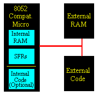
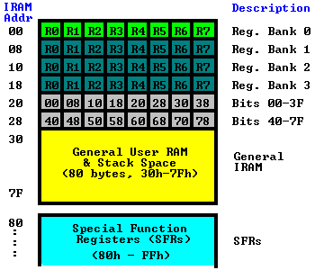
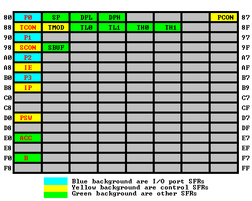
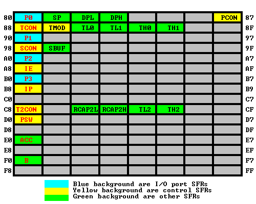

8051Tutorial¶
本文是 8052mcu.com 的翻译版本
第一章 微控制器简介¶
许多刚接触微控制器（对文档来说，是8052）的开发者都来自 PC/Windows 或 Macintosh 环境。
虽然大多数的编程概念可以顺利地照搬到 8052 环境中。但是有相当多的进入微控制器的世界时，会遇到一些困扰他们的问题。
在深入研究微控制器的细节之前，特别是 8052。我们将解决一些常见的绊脚石。
1.1 什么是单片机？¶
微控制器（通常缩写为MCU）是一个单一的计算机芯片（集成电路），它可以执行一个用户程序，通常是为了控制某些设备--因此被称为微控制器。
该程序通常包含在第二个芯片中，称为EPROM，或和微控制器本身在同一芯片中。微控制器通常出现在微波炉、汽车、键盘、CD播放器、手机、录像机、安全系统、考勤钟等。
微控制器用于需要一定计算能力的设备，但不需要像电脑那样的计算能力。复杂的（昂贵的）486或奔腾系统所提供的计算能力。通常需要大量的支持性电路（大型主板、数百兆字节的RAM、硬盘、硬盘控制器、显卡等）。一个微波炉不需要那么多的计算能力。
基于微控制器的系统通常更小，更可靠，也更便宜。它们是上述应用类型的理想选择，在这些应用中，成本和单位尺寸是非常重要的考虑因素。在这样的应用中，几乎总是希望生产出需要最小数量的集成电路的电路，需要最小数量的电路，需要最小的物理空间，需要最少的能量，并且成本尽可能低。
流行的网站 HowStuffWorks.com 有一篇很好的文章，可以为你提供一些背景资料 关于单片机的一般信息，http://www.howstuffworks.com/microcontroller.htm
以下是这篇文章的翻译¶
单片机（微控制器）如何工作¶
如今，微控制器隐藏在数量惊人的产品中。如果你的微波炉有一个 LED 或 LCD 屏幕和一个键盘，它就包含一个微控制器。所有的现代汽车都至少包含一个微控制器，而且可以有多达六或七个。发动机是由微控制器控制的，还有防抱死制动器、巡航控制、等等。任何有遥控器的设备几乎都包含一个微控制器： 电视、VCR 和高端立体声系统都属于这个类别。不错，还有很棒的单反和数码相机、手机、摄录一体机、应答机、座机（有来电显示、20个号码记忆等的）、寻呼机、和功能丰富的冰箱、洗碗机、洗衣机和烘干机（有显示屏和键盘的）...... 你会明白的。基本上，任何与用户互动的产品或设备都有一个微控制器埋在里面。
在这篇文章中，我们将探讨微控制器，以便你能了解它们是什么，以及它们如何工作。然后我们将更进一步，讨论你如何自己开始使用微控制器 -- 我们将用微控制器创建一个数字时钟！我们还将建立一个数字温度计。我们还将制作一个数字温度计。在这个过程中，你会学到很多关于微控制器在商业产品中的使用方法。
什么是微控制器？¶
单片机是一种计算机。所有的计算机--无论是个人台式电脑还是大型机，亦或是微控制器的--都有几个共同点。
-
所有的计算机都有一个执行程序的CPU （central processing unit, 中央处理单元）。如果你现在正坐在一台台式电脑前阅读这篇文章，该机器中的CPU正在执行一个程序，该程序实现了正在显示这个页面的网络浏览器。
-
CPU从某处加载该程序。在你的台式机上，浏览器程序是从硬盘中加载的。
-
计算机有一些RAM（random-access memory, 随机存取存储器），可以存储 "变量"。
-
计算机有一些输入和输出设备，以便它能与人交谈。在你的台式机上，和是输入设备，和是输出设备。硬盘是一个I/O设备--它同时处理输入和输出。
你使用的台式机是 "通用计算机"，可以运行成千上万个程序中的任何一个。微控制器是 "特殊用途计算机"。微控制器能做好一件事。还有一些其他的共同特征来定义微控制器。如果一台计算机符合这些特征中的大多数，那么你可以称它为 "微控制器"。
-
微控制器被 "嵌入（embedded） "一些其他设备（通常是消费产品）内，以便它们能够控制产品的功能或行动。因此，微控制器的另一个名称是 "嵌入式控制器"。
-
微控制器 专用于(dedicated) 一项任务，运行一个特定的程序。该程序存储在 ROM（只读存储器）中，一般不会改变。
-
微控制器通常是**低功率的设备(low-power devices)**。一台台式电脑几乎总是插在墙上的插座上，可能会消耗50瓦的电力。一个用电池操作的微控制器可能消耗50毫瓦的电力。
-
一个微控制器有一个**专门的输入设备（dedicated input device）**，通常（但不总是）有一个小的 LED 或 LCD 显示器用于输出。一个微控制器也从它所控制的设备中获取输入，并通过向设备中的不同部件发送信号来控制设备。例如，电视机内的微控制器接受来自电视机的输入并在电视屏幕上显示输出。控制器控制频道选择器、系统和显像管电子装置的某些调整，如色调和亮度。汽车中的控制器从传感器（如氧气和爆震传感器）获得输入，并控制燃料混合和火花塞正时等事项。控制器接收来自键盘的输入，在LCD显示器上显示输出，并控制微波发生器的开关。
-
微控制器通常 体积小、成本低（small and low cost） 。所选择的元件要尽量减小尺寸，并尽可能地便宜。
-
微控制器通常，但并不总是，以某种方式进行 加固（ruggedized）。例如，控制汽车发动机的微控制器必须在普通计算机一般无法处理的极端温度下工作。一辆汽车的微控制器在阿拉斯加必须在-30华氏度（-34摄氏度）的天气下正常工作，而同样的微控制器在内华达州可能要在120华氏度（49摄氏度）下工作。当你加上自然产生的热量，发动机舱内的温度可高达150或180华氏度（65-80摄氏度）。另一方面，嵌入录像机内的微控制器根本没有经过加固处理。
用于实现微控制器的实际处理器可以有很大差异。例如，Inside Cell Phone 显示的手机包含一个 Z80 处理器. Z-80 是1970年代开发的 8 位微控制器，最初用于当时的家用电脑。我被告知 How GPS Receivers Work中显示的 Garmin GPS 包含 Intel 80386 的低功率版本。80386 最初是用于台式电脑的。
在许多产品中，如微波炉，对CPU的要求相当低，价格是一个重要的考虑因素。在这些情况下，制造商转向**专用的微控制器**芯片--这些芯片最初被设计为低成本、小型、低功耗的嵌入式CPU。摩托罗拉 6811 和 Intel 8051 都是这种芯片的好例子。还有一个被称为 "PIC微控制器 "的流行控制器系列，由一家名为 MicroChip 的公司创建。按照今天的标准，这些CPU是非常简约的；但它们在大量购买时价格非常便宜，而且往往只需一个芯片就能满足设备设计者的需求。
一个典型的低端微控制器芯片上可能有 1000 个字节 ROM 和 20 个字节的 RAM，还有 8 个I/0引脚。在大量的情况下，这些芯片的成本有时可能只是几分钱。你当然不可能在这样的芯片上运行MicroSoft Word -- MicroSoft Word 可能需要 30 兆字节的 RAM 和一个每秒可运行数百万条指令的处理器。但是，你也不需要用 Microsoft Word 来控制一个微波炉。对于微控制器，你有一个特定的任务要完成，低成本、低功耗的性能是最重要的。
后面讲的好像是 BASIC Stamp，太复古了，不搬了（
1.1.1 单片机程序存储¶
单片机的程序通常存储在一个叫做 EPROM 的存储集成电路（IC）上，或者存储在单片机芯片本身。
EPROM (Electrically Programmable Read Only Memory)（可是我学的怎么是EEPROM）是一种特殊类型的集成电路，除了存储程序代码或其他数据外，即使关闭EPROM的电源，它也能保持。
但即使关闭了 EPROM 的电源，它也能保持不变。一旦你为一个微控制器开发了软件，它通常被编程(programmed)（或 "烧录"(burned))到 EPROM 芯片中，随后该芯片被实际插入到硬件的电路中。微控制器访问存储在EPROM中的程序并执行它。因此，程序被提供给微控制器，而不需要硬盘、软盘驱动器或任何其他访问此类设备所需的电路。
近年来，越来越多的微控制器提供了将程序内部加载到微控制器芯片本身的能力。因此，与其拥有一个包括微控制器和外部 EPROM 芯片的电路，现在完全有可能拥有一个内部存储程序代码的单一微控制器。
1.1.2 "加载 "你的单片机程序¶
你将软件从你的 PC 传输到硬件上的方式，取决于你是使用 EPROM 还是直接将程序传输到微控制器上。
为EPROM编程需要特殊的硬件，称为 EPROM 编程器。一个 EPROM 编程器是一个通过串行（serial）、并行（parallel）或 USB 端口连接到 PC 的设备。然后你 将EPROM芯片放入设备上的一个插座中，然后使用特殊的软件将你的程序从 PC 上传输到 EPROM 上。然后使用特殊的软件将你的程序从 PC 传输到 EPROM 编程器，再由它将你的程序 "烧 "进芯片。
一旦你的程序被烧入 EPROM，你就可以将 EPROM 取出来，并将其插入你的电路中。
如果程序存储在微控制器本身，要对其进行编程，通常需要一个串口（serial port）来下载程序的更新。许多这样的设备都有一个 "后门"，你仍然可以将微控制器插入 EPROM 编程器中，并按照上一段的描述加载软件。然而，如果你从头开始设计你的电路，通常是一个好主意，可以在不把 IC 从电路上拆下来的情况下为微控制器编程。特别是对于那些可能很难从电路上拆下来的表面贴装部件，更是如此。电路的表面贴装部件尤其如此。你选择使用的微控制器的数据手册应该为你提供信息 你选择使用的微控制器的数据手册应该为你提供必要的信息，以设计你的电路，使其具有这种能力。
1.2 什么是8051或8052？¶
8052 是一个 8 位的微控制器，最初由 Intel 在 70 年代末开发。它包括一个由 255 个操作码（operation codes, opcodes）组成的指令集，32 条输入/输出线，三个用户可控的定时器(Timer)，一个集成的自动串行端口(serial port)，以及 256 字节的片上RAM。8051 是一个非常类似的MCU，但它只有两个定时器和 128 字节的片上RAM。
8052 的设计使 MCU 的控制和MCU与外部设备之间的所有输入/输出都是通过 特殊功能寄存器（Special Function Registers, SFRs） 完成的。每个 SFR 的地址在 128 和 255 之间。在保持与原始 8052 兼容的情况下，可以通过添加额外的 SFR 来为新的衍生 MCU 增加额外的功能。这使得开发者可以在任何 "8052兼容 "的MCU上使用相同的软件开发工具。
Intel 明智地将其 "8052 核心 "授权给其他半导体公司（STC：好耶！）。这使得 8052 架构成为一个全行业的标准。现在，20多年过去了，几十家半导体公司生产的微控制器都是基于最初的 8052 内核的。每个半导体公司在他们的 MCU 中提供的额外功能是通过利用新的 SFR 来实现的，除了所有 8052 兼容 MCU 中的标准和原始的 8052-SFR 之外。
警告： 虽然大多数基于 8052 内核的微控制器将包括 8052 内核的标准 SFR，但一些衍生产品可能只实现其中的一个子集。他们也可能改变一些位的功能。一般来说，这种情况不会发生，但在使用衍生芯片时，要注意这一点。
在本文档中，术语 "8052 "将指任何与原始8052兼容的MCU。它至少要支持8052指令集，支持8052的26个SFR，提供三个用户定时器，并有至少256字节的内部RAM。
术语 "8051 "将指任何与8052兼容的MCU，它不符合前一段的规格，而是反映了英特尔的8051微控制器是8052的一个更有限的版本。至少，8051必须支持原始8051所支持的21个SFR，并支持标准8052指令集。一般来说，8051会有两个用户定时器和128字节的片上RAM，尽管有些设计只有64字节的片上RAM。
1.2.1 衍生芯片（Derivative Chips）¶
术语 "衍生芯片 "在本文件中是指任何半导体公司生产的 8051 或 8052 兼容的MCU。由任何半导体公司生产的 MCU。目前有数百种衍生芯片，由几十家半导体公司生产。几十家半导体公司生产的数百种衍生芯片。衍生芯片通常（但不总是）能够执行标准的8051或8052程序 而无需修改。衍生芯片必须以 8052 指令集为基础并支持 适当的SFR（8051至少有21个SFR，8052有26个）。
为 8052 设计的软件开发工具总是可以用来为任何衍生芯片开发软件。只要程序员明确定义他们所使用的衍生芯片所支持的任何新的SFR。
1.3 使用Windows或Linux¶
有很多人问，一个微控制器是否与Windows兼容，或者他们是否可以在他们的单片机上加载Linux。这些问题表明他们对微控制器是什么缺乏了解。
不，一个微控制器不能运行Windows，也不能运行Linux (PS:现在已经有 MCU 可以运行linux了)。微控制器本身也不兼容 Window。你的微波炉能运行 Linux 吗？你的汽车与 Windows 兼容吗？这些问题就像问一个微控制器是否运行 Windows 一样愚蠢。
重要的是要记住微控制器是用来做什么的。一个微控制器不是一台PC。它是一个集成电路，将运行你的程序来控制硬件设备，如前面提到的那些提到的那些设备。微波炉不需要Windows，你的汽车当然也不需要 Linux 来维持正确的空气-燃料混合物。
也就是说，你可以--而且许多开发者也在使用--使用 Windows 或 Linux 来开发微控制器的程序。许多 Windows 产品允许你在 Windows 环境下编写8052软件，尽管该软件最终将由微控制器执行。一旦软件被微控制器执行，它是否最初在 Windows、Linux 或任何其他操作系统下开发并不重要。
第二章 存储器的类型¶
8052 有三种非常普遍的内存类型。为了有效地对 8052 进行编程，有必要对这些存储器类型有一个基本的了解。
这些内存类型在下面的图形中得到了说明。它们是**片上存储器(On-Chip Memory)，**代码存储器(External Code Memory)，和 外部RAM(External RAM) 。

**片上存储器**是指任何实际存在于微控制器本身的存储器（代码存储器、RAM 或其他）。片上存储器可以有几种类型，但我们很快就会讨论这个问题。
**外部代码存储器**是驻留在片外的代码（或程序）存储器。这通常是以外部EPROM的形式存在。
**外部RAM**是驻留在片外的RAM存储器。这通常是以标准SRAM(静态随机存储器)或Flash RAM(闪存)的形式。
代码存储器(Code Memory)¶
代码存储器是保存要运行的实际 8051 程序的存储器。这个存储器被限制在64K，有许多形状和大小。代码存储器可以在片上找到，或者以 ROM 或 EPROM 的形式烧入微控制器。代码也可以完全保存在片外的 ROM 中，或者更常见的是外部 EPROM。闪存 RAM 也是另一种流行的存储程序的方法。这些存储器类型的各种组合也可以使用--也就是说，在一个 EPROM 中可以有4K的片上代码存储器和 64K 的片外代码存储器。
当程序被存储在片上时，64K的最大容量通常被减少到4K、8K或16K。这取决于正在使用的芯片的版本。每个版本都提供了特定的功能，而芯片与芯片之间的区别因素之一是芯片的ROM/EPROM空间有多大。
然而，代码存储器最常被实现为片外EPROM。这在低成本的开发系统和学生开发的系统中尤其如此。
编程提示。由于代码存储器被限制在64K，8051程序也被限制在64K。一些汇编程序和编译器提供了绕过这一限制的方法，当与特殊的硬件连接使用时。然而，如果没有这种特殊的编译器和硬件，程序就被限制在64K。
硬件提示。一些制造商，如 Dallas、Intel 和 Philips 有特殊的8052 衍生产品，可以处理几兆字节的内存
外部RAM (External RAM)¶
作为内部RAM 的一个明显的反面，8051也支持所谓的外部 RAM。
顾名思义，外部 RAM 是任何片外的随机存取存储器。由于内存是在片外，所以在访问方面没有那么灵活，而且速度也比较慢。例如，将一个内部 RAM 位置增加1，只需要一条指令和一个指令周期。增加一个存储在外部 RAM 中的1字节的值需要4条指令和7个指令周期。在这种情况下，外部存储器的速度要慢7倍!
外部RAM在速度和灵活性上的损失，在数量上的收获。虽然内部RAM被限制在128字节（8052为256字节），但 8051 支持高达 64K 的外部 RAM。
编程提示。8051 只能寻址 64K 的 RAM。要将 RAM 扩展到这个限制之外需要编程和硬件技巧。你可能不得不 "手工 "完成，因为许多编译器和汇编器虽然为超过64K的程序提供支持，但不支持超过 64K 的 RAM。这是相当奇怪的，因为根据我的经验，程序通常可以装在 64k 中，但往往缺少 RAM。因此，如果你需要超过 64k 的 RAM，请检查你的编译器是否支持它--但如果它不支持，请准备手动操作。
片上存储器（On-Chip Memory）¶
正如本章开头提到的，8051包括一定量的片上存储器。片上存储器实际上是两种类型之一。内部RAM和特殊功能寄存器（SFR）存储器。8051的内部存储器的布局在下面的存储器图中呈现。

如本图所示，8051 有一个 128 字节的内部 RAM 库。这个内部 RAM 在 8051 的芯片上，所以它是最快的 RAM，而且在读、写和修改其内容方面也是最灵活的。内部 RAM 是易失性的，所以当 8051 被复位（Reset）时，这个内存就被清除了。
128字节的内部RAM被细分为内存地图上所示的内容。前 8 个字节（00h - 07h）是 "寄存器组0"。通过操作某些SFRs，程序可以选择使用寄存器组 1、2、3 和 4。 可以选择使用寄存器组1、2或3。这些备选的寄存器组位于内部RAM的地址 08h 到 1Fh。我们将在后面的章节中进一步讨论 "寄存器组"。现在只需要知道它们存在并且是内部 RAM 的一部分。
位存储器也是内部 RAM 的一部分。我们很快会讨论更多关于位存储器的内容，但现在只需记住位存储器实际上是在内部 RAM 中，从地址 20h 到 2Fh。
内部 RAM 剩下的 80 字节，从地址 30h 到 7Fh，可以被需要频繁或高速访问的用户变量所使用。这个区域也被微控制器用来作为操作堆栈的存储区域。这一事实严重限制了 8051 的堆栈，因为如内存地图所示，为堆栈保留的区域只有 80 个字节--而且通常更少，因为这 80 个字节必须由堆栈和用户变量共享。
寄存器组(Register Banks)¶
8051使用8个 "R "寄存器，在其许多指令中使用。这些 "R "寄存器的编号从 0 到 7（R0、R1、R2、R3、R4、R5、R6 和 R7）。这些寄存器一般用于协助操作数值和将数据从一个内存位置移动到另一个内存位置。例如，要把R4的值加到累加器（Accumulator）中，我们要执行以下指令。
ADD A,R4
因此，如果累加器（Accumulator）（A）包含值6，R4包含值3，那么在执行该指令后，累加器将包含值9。
然而，正如内存图所示，"R "寄存器R4实际上是内部RAM的一部分。具体来说，R4的地址是04h。这可以在内存地图的亮绿色部分看到。因此，上面的指令与下面的操作完成了同样的事情。
ADD A,04h
这条指令将内部RAM地址04h中的值加到累加器的值中，将结果留在累加器中。由于R4实际上是内部RAM的04h，上述指令有效地完成了同样的事情。 但要注意的是! 正如内存图所示，8051有四个不同的寄存器库。当8051第一次启动时，默认使用寄存器组0（地址00h到07h）。然而，你的程序可以指示8051使用一个备用的寄存器库，即寄存器库1，2，或3。在这种情况下，R4将不再与内部RAM地址04h相同。例如，如果你的程序指示8051使用寄存器组3，"R "寄存器R4现在将与内部RAM地址1Ch同步。
寄存器组的概念给8051增加了很大的灵活性，特别是在处理中断(interrupt)的时候（我们后面会讲到中断）。然而，请永远记住，寄存器组实际上位于内部RAM的前32个字节中。
编程提示：如果你只使用第一个寄存器组（即0组），你可以使用内部RAM位置08h到1Fh供你自己使用。但是如果你打算使用寄存器组1、2或3，要非常小心使用低于20h的地址，因为你可能最终会覆盖你的 "R "寄存器的值。
位存储器(Bit Memory)¶
8051，作为一个面向通信的微控制器，让用户有能力访问一些位变量。这些变量可以是1或0。
有128位变量可供用户使用，编号为00h至7Fh。用户可以用SETB和CLR等命令来使用这些变量。例如，要将位号24（十六进制）设置为1，你可以执行指令。
SETB 24h
值得注意的是，位存储器实际上是内部RAM的一部分。事实上，128位变量占据了从20h到2Fh的16个字节的内部RAM。因此，如果你把数值FFh写到内部RAM地址20h，你就有效地设置了00h到07h的位。这就是说。 MOV 20h,#0FFh 相当于。
SETB 00h
SETB 01h
SETB 02h
SETB 03h
SETB 04h
SETB 05h
SETB 06h
SETB 07h
如上图所示，位存储器并不是一种新的存储器类型。它实际上只是内部RAM的一个子集。但是由于8051提供了特殊的指令来逐位访问这16个字节的内存，所以把它看成是一种独立的内存类型是很有用的。然而，要始终记住它只是内部RAM的一个子集，在内部RAM上进行的操作可以改变位变量的值。
编程提示：如果你的程序不使用位变量，你可以使用内部RAM的位置20h到2Fh供你自己使用。但是如果你打算使用位变量，在使用20h到2Fh的地址时要非常小心，因为你可能最终会覆盖你的位的值!
位变量00h到7Fh是供用户在其程序中定义的功能。然而，80h及以上的位变量实际上是用来逐位访问某些SFR的。例如，如果输出线P0.0到P0.7都是空的（0），你想打开P0.0输出线，你可以执行。
MOV P0,#01h
或者你可以执行。
SETB 80h
这两条指令完成了同样的事情。然而，使用SETB指令将打开P0.0线，而不影响其他P0输出线的状态。MOV命令有效地关闭了所有其他的输出线，在某些情况下，这可能是不可接受的。
编程提示：默认情况下，当微控制器启动时，8051将栈指针（Stack Pointer, SP）初始化为07h。这意味着栈将从地址08h开始并向上扩展。如果你要使用备用寄存器组（组 1，2或3），你必须将栈指针初始化为高于你要使用的最高寄存器库的地址，否则栈将覆盖你的备用寄存器组。同样，如果你将使用位变量，通常最好将栈指针初始化为大于2Fh的某个值，以保证你的位变量受到栈的保护。
特殊功能寄存器(Special Function Register,SFR)存储器¶
特殊功能寄存器（Special Function Register,SFR）是控制 8051 处理器特定功能的内存区域。例如，四个SFR允许访问8051的32条输入/输出线。另一个 SFR 允许程序读取或写入 8051 的串行端口。其他 SFR 允许用户设置串口波特率(serial baud rate)，控制和访问定时器，并配置 8051 的中断(interrupt)系统。
当编程时，SFRs 有一种作为内部存储器的错觉。例如，如果你想把数值 "1 "写到内部RAM位置50 hex，你将执行指令。
MOV 50h,#01h
MOV 99h,#01h
编程提示。SFR是用来控制8051的功能的。每个SFR都有一个特定的目的和格式，这将在后面讨论。不是所有80h以上的地址都被分配给SFR。然而，即使一个给定的地址没有被分配给SFR，这个区域也不能被用作额外的RAM存储器。
第三章 特殊功能寄存器¶
什么是特殊功能寄存器¶
8051是一个灵活的微控制器，有相对较多的操作模式。你的程序可以通过操纵8051的特殊功能寄存器（SFRs）的值来检查和/或改变8051的操作模式。
SFRs的访问就像它们是正常的内部RAM一样。唯一的区别是，内部RAM的地址为00h到7Fh，而SFR寄存器的地址范围为80h到FFh。
每个SFR都有一个地址（80h到FFh）和一个名称。下面的图表提供了8051的SFR、它们的名字和它们的地址的图解。

正如你所看到的，尽管80h到FFh的地址范围提供了128个可能的地址，但在一个标准的8051中只有21个SFR（在8052中是26个）。在SFR范围内的所有其他地址（80h到FFh）被认为是无效的。写入或读出这些寄存器可能产生未定义的值或行为。
编程提示：建议你不要读或写没有分配给 SFR 的 SFR 地址。这样做可能会引起未定义的行为(Undefined Behavior)，并可能导致你的程序与其他 8051 衍生品不兼容，这些衍生品将给定的 SFR 用于其他目的。
3.1 引用SFRs¶
当用汇编语言编写代码时，SFR可以通过其名称或地址来引用。 例如，我们可以在上图中看到，SBUF SFR的地址是99h。如果我们想用汇编语言编写代码，将数值24h写入SBUF SFR，我们可以这样编码。
MOV 99h, #24h
MOV SBUF, #24h
3.2.1 引用SFR的位¶
SFR的各个位是以两种方式之一来引用的。一般的惯例是将SFR命名为 后面加一个句号和位号。例如，SCON.0指的是SCON SFR的第0位（最小有效位）。SCON SFR的第0位（最小有效位）。SCON.7指的是SCON的第7位（最有意义的位）。 这些位也有名字。SCON.0是RI，SCON.7是SM0。用这些位的名字来指代也是可以接受的。他们的名字也是可以接受的，尽管在本文件中我们通常会用SCON.0的格式来指代他们，因为那会告诉你在哪个SFR中的哪一个位。因为它告诉你正在处理的是哪个SFR中的哪个位。
3.3 可位寻址的SFRs¶
所有地址能被8整除的SFR，如80h、88h、90h、98h等都是可位寻址的。这意味着你可以使用 SETB 和 CLR 指令来设置或清除这些 SFR 的各个位。
3.3 SFR类型¶
正如图表中提到的，有蓝色背景的SFR是与I/O端口相关的SFR。8051有4个8位的I/O端口，总共有32条I/O线。一个给定的I/O线是高电平还是低电平以及从该线读出的值由绿色的SFR控制。
黄色背景的SFRs是以某种方式控制8051某些方面的操作或配置的SFRs。例如，TCON控制定时器，SCON控制串行端口。
其余的SFRs，有绿色背景，是 "其他SFRs"。这些SFRs可以被认为是辅助性的SFRs，因为它们不直接配置8051，但显然8051没有它们就不能运行。例如，一旦使用SCON配置了串口，程序可以使用SBUF寄存器读取或写入串口。
编程提示。上图中名称为红色的SFR是可以通过位操作（即使用SETB和CLR指令）访问的SFR。其他的SFR不能用位操作来访问。正如你所看到的，所有地址能被8整除的SFR都可以用位操作访问。
3.4 SFR的描述¶
本节将努力快速概述在上述SFR图表中发现的每个标准SFR。本节不打算完全解释每个SFR的功能--这些信息将在本教程的不同章节中介绍。本节只是让你对每个SFR的作用有一个大致的了解。
P0 (Port 0, Address 80h, Bit-Addressable): 这是输入/输出端口0。 这个SFR的每一位都对应于微控制器上的一个引脚。例如，端口0的第0位是P0.0脚，第7位是P0.7脚。在这个SFR的某一位上写上1，就会在相应的I/O引脚上发出一个高电平，而写上0则会使其变成低电平。
编程提示。虽然8051有四个I/O端口（P0，P1，P2和P3），但如果你的硬件使用外部RAM或外部代码存储器（即你的程序存储在外部ROM或EPROM芯片中，或者你使用外部RAM芯片），你可以不使用P0或P2。这是因为8051使用端口P0和P2来寻址外部存储器。因此，如果你使用外部RAM或代码存储器，你只能使用端口P1和P3供你自己使用。
SP（Stack Pointer，栈指针，地址81h）。这是微控制器的栈指针。这个SFR表示从栈中读取下一个值的位置，在内部RAM中。如果你把一个值推入栈，这个值将被写入SP+1的地址。也就是说，如果SP持有07h的值，PUSH指令将把这个值推到堆栈的地址08h。这个SFR被所有修改堆栈的指令所修改，如 PUSH, POP, LCALL, RET, RETI，以及每当微控制器引发中断时。
编程提示。SP SFR在启动时被初始化为07h。这意味着堆栈将从08h开始，在内部RAM中开始向上扩展。由于备用寄存器组1、2、3以及用户位变量占据了从08h到2Fh的内部RAM，如果你要使用备用寄存器组和/或位存储器，有必要在程序中把SP初始化为其他值。把SP初始化为2Fh作为你每个程序的第一条指令也不失为一个好主意，除非你100%确定你不会使用这些寄存器组和位变量。
DPL/DPH（Data Pointer Low/High，数据指针低/高，地址为82h/83h）。SFR的DPL和DPH一起工作，代表一个16位的值，称为数据指针。数据指针被用于有关外部RAM的操作和一些涉及代码存储器的指令。由于它是一个无符号的两字节的整数值，它可以表示从0000h到FFFFh（0到65,535的十进制）的值。
编程提示。DPTR(Data Pointer 2 Bytes，双字节数据指针)实际上是DPH和DPL合在一起的一个16位值。在现实中，你几乎总是要一次处理一个字节的DPTR。例如，要把DPTR推入堆栈，你必须先推DPL，然后推DPH。你不能简单地将DPTR推入堆栈。此外，有一条指令是 "增加DPTR"。当你执行这条指令时，这两个字节被当作一个16位的值来操作。然而，没有指令可以递减DPTR。如果你想递减DPTR的值，你必须自己编写代码来实现。
PCON（Power Control，电源控制，地址87h）。电源控制 SFR 用于控制8051的电源控制模式。8051的某些操作模式允许8051进入一种 "睡眠 "模式，需要的功率要小得多。这些操作模式是通过PCON控制的。此外，PCON中的一个位被用来加倍8051的串行端口的有效波特率。
TCON (Timer Control, Addresses 88h, Bit-Addressable): 定时器控制SFR用于配置和修改8051的两个定时器的工作方式。这个SFR控制两个定时器中的每一个是运行还是停止，并包含一个标志来表示每个定时器已经溢出。此外，一些与定时器无关的位位于TCON SFR中。这些位用于配置激活外部中断的方式，也包含外部中断标志，当外部中断发生时，这些标志被设置。
TMOD（Timer Mode，定时器模式，地址为89h）。定时器模式SFR用于配置两个定时器的工作模式。使用这个SFR，你的程序可以将每个定时器配置成一个16位的定时器，一个8位的自动加载定时器，一个13位的定时器，或者两个独立的定时器。此外，你可以将定时器配置为只在外部引脚被激活时计数，或者对外部引脚指示的 "事件 "进行计数。
TL0/TH0（Timer 0 Low/High，定时器0低/高，地址8Ah/8Ch）。这两个SFR一起代表定时器0，它们的确切行为取决于在TMOD SFR中如何配置定时器；但是，这些定时器总是向上计数。可配置的是它们的增量方式和时间。
TL1/TH1（Timer 1 Low/High，定时器1低/高，地址为8Bh/8Dh）。这两个SFR一起代表定时器1。它们的确切行为取决于在TMOD SFR中如何配置定时器；但是，这些定时器总是在向上计数。可配置的是它们的增量方式和时间。
P1（Port 1，端口1，地址90h，可寻址）。这是输入/输出端口1。这个SFR的每一位都与微控制器上的一个引脚相对应。例如，端口1的第0位是引脚P1.0，第7位是引脚P1.7。在这个SFR的某一位上写入1的值将在相应的I/O引脚上发送一个高电平，而0的值将使它变成一个低电平。
SCON（Serial Control，串行控制，地址为98h，可位寻址）。串行控制SFR是用来配置8051的板载串行端口的行为。这个SFR控制串口的波特率，串口是否被激活以接收数据，还包含当一个字节被成功发送或接收时被设置的标志。
编程提示。要使用8051的板载串口，一般需要初始化下列SFR。SCON, TCON, 和TMOD。这是因为SCON控制着串口。然而，在大多数情况下，程序希望使用其中的一个定时器来建立串口的波特率。在这种情况下，有必要通过初始化TCON和TMOD来配置定时器1。
SBUF（Serial Data Buffer，地址为99h）。串行缓冲器SFR用于通过板上的串行端口发送和接收数据。任何写入SBUF的值都将被送出串口的TXD引脚。同样，8051通过串口的RXD引脚接收的任何数值都将通过SBUF传递给用户程序。换句话说，SBUF在写入时作为输出端口，在读出时作为输入端口。
P2（Port 2，地址A0h，可位寻址）。这是输入/输出端口2。这个SFR的每一位都与微控制器上 的一个引脚相对应。例如，端口2的第0位是P2.0脚，第7位是P2.7脚。在这个SFR的某一位上写上1，就会在相应的I/O引脚上发出一个高电平，而写上0就会把它变成一个低电平。
编程提示。虽然8051有四个I/O端口（P0，P1，P2和P3），但如果你的硬件使用外部RAM或外部代码存储器（即，你的程序存储在外部ROM或EPROM芯片中，或者如果你使用外部RAM芯片），你可以不使用P0或P2。这是因为8051使用端口P0和P2来寻址外部存储器。因此，如果你使用外部 RAM 或代码存储器，你只能使用端口 P1 和 P3 供你自己使用。
IE（Interrupt Enable Control，中断使能，地址为A8h）。中断使能SFR是用来启用和禁用特定的中断的。SFR的低7位用于启用/禁用特定的中断，而最高位则用于启用或禁用所有的中断。因此，如果IE的高位是0，那么所有的中断都被禁用，而不管一个单独的中断是否通过设置低位而被启用。
P3（端口3，地址B0h，可位寻址）。这是输入/输出端口3。这个SFR的每一位都对应着微控制器上的一个引脚。例如，端口3的第0位是P3.0脚，第7位是P3.7脚。向这个SFR的某个位写一个1的值，将在相应的I/O引脚上发送一个高电平，而写一个0的值将使它变成一个低电平。
IP（Interrupt Priority Control, 中断优先级，地址为B8h，可位寻址）。中断优先级SFR是用来指定每个中断的相对优先级。在8051中，一个中断可以是低（0）优先级或高（1）优先级。一个中断可能只中断低优先级的中断。例如，如果我们配置8051，使所有的中断都是低优先级的，除了串行中断，串行中断将总是能够中断系统，即使另一个中断目前正在执行。然而，如果一个串行中断正在执行，其他中断将无法中断串行中断例程，因为串行中断例程具有最高的优先级。
PSW（PROGRAM STATUS WORD，程序状态字，地址为D0h，可位寻址）。程序状态字用于存储一些由8051指令设置和清除的重要位。PSW SFR包含进位标志、辅助进位标志、溢出标志和奇偶性标志。此外，PSW寄存器包含寄存器库选择标志，用于选择当前选择的 "R "寄存器库。
编程提示：如果你写了一个中断处理程序，那么在堆栈中保存PSW SFR并在中断完成后恢复它是一个非常好的主意。许多8051指令修改了PSW的位。如果你的中断例程不能保证PSW在退出时和进入时一样，你的程序一定会表现得很不正常和不可预测--而且会很难调试，因为这种行为往往没有任何意义。
ACC (Accumulator，累加器, 地址 E0h, 可位寻址):累加器是8051中最常用的SFR之一，因为它涉及到很多指令。累加器作为一个SFR位于E0h，这意味着指令MOV A,#20h实际上与MOV E0h,#20h相同。然而，使用第一种方法是个好主意，因为它只需要两个字节，而第二种方案需要三个字节。
B（B Register，B 寄存器，地址为F0h，可位寻址）。B "寄存器在两条指令中使用：乘法和除法操作。B 寄存器也通常被程序员用作辅助寄存器来临时存储数值。
其他SFR¶
上图是所有存在于标准8051中的SFR的总结。所有8051的衍生微控制器必须支持这些基本的SFR，以保持与底层MSCS51标准的兼容性。
当半导体公司希望开发一个新的8051衍生产品时，一个常见的做法是增加额外的SFRs以支持新芯片中存在的新功能。例如，达拉斯半导体公司的 DS80C320 是向上兼容8051的。这意味着任何在标准8051上运行的程序都应该在DS80C320上运行而无需修改。这意味着上面定义的所有SFR也适用于达拉斯组件。
然而，由于DS80C320提供了许多标准8051所没有的新功能，必须有一些方法来控制和配置这些新功能。这可以通过在这里列出的SFR之外添加额外的SFR来实现。例如，由于DS80C320支持两个串行端口（而8051只有一个），所以增加了SFRs SBUF2和SCON2。除了上面列出的所有SFR之外，DS80C320还将这两个新的SFR识别为有效，并使用它们的值来决定第二串行端口的工作模式。很明显，这些新的SFR被分配到原始8051中未使用的SFR地址。通过这种方式，可以开发出新的8051衍生芯片，它可以运行现有的8051程序。
编程提示：如果你编写的程序利用了特定衍生芯片的新SFR，并且没有包括在上述SFR列表中，你的程序将无法在不存在该SFR的标准8051上正确运行。因此，只有当你确定你的程序只能在那个特定的微控制器上运行时，才能使用非标准的SFRs。同样，如果你写的代码使用了非标准的SFRs，并随后与第三方分享，一定要让对方知道你的代码使用了非标准的SFRs，以免他们在运行时发现奇怪的行为而感到头痛。
第四章 基本寄存器¶
8052的一些寄存器可以被认为是 "基本的"。没有它们，几乎无法完成工作，因此有必要对每个寄存器进行详细的解释，以确保读者在进入更复杂的开发领域之前了解这些寄存器。
累加器（Accumulator）¶
如果你使用过其他的汇编语言，你会对累加器寄存器的概念很熟悉。
累加器，顾名思义，是作为一个通用的寄存器，用于累积大量指令的结果。它可以容纳一个8位（1字节）的值，由于使用累加器的指令数量众多，它是8052最通用的寄存器。在8052的255条指令中，超过一半的指令以某种方式操作或使用累加器。
例如，如果你想把数字10和20相加，所得的30将被储存在累加器中。一旦你在累加器中得到一个值，你可以继续处理这个值，也可以把它储存在另一个寄存器或内存中
R 寄存器(R Register)¶
R 寄存器是一组由8个寄存器组成的，它们被命名为R0、R1等，直到R7，包括R7。
这些寄存器在许多操作中被用作辅助寄存器。继续上面的例子，也许你正在加10和20。原始数字10可以存储在累加器中，而数值20可以存储在，例如，寄存器R4中。要处理这个加法，你要执行这样的命令。
ADD A,R4
你可以认为 "R "寄存器是非常重要的辅助寄存器，或者说是 "帮助 "寄存器。如果没有这些 "R "寄存器，单单是累加器就不会很有用。
R "寄存器也被用来临时存储数值。例如，假设你想把R1和R2的值相加，然后再减去R3和R4的值。这样做的一个方法是。
MOV A,R3 ;将R3的值移到累加器中。
ADD A,R4 ;加上R4的值
MOV R5,A ;将得到的值暂时存放在R5中。
MOV A,R1 ;将R1的值移到累加器中。
ADD A,R2 ;加上R2的值
SUBB A,R5 ;减去R5的值(现在包含R3+R4)
正如你所看到的，我们用R5来暂时保存R3和R4的总和。当然，这不是计算(R1+R2)-(R3+R4)的最有效方法，但它确实说明了 "R "寄存器作为一种临时存储值的方法的用途。
B 寄存器¶
B 寄存器与累加器非常相似，它可以保存8位（1字节）的值。
B 寄存器只被两个8051指令使用。MUL AB和DIV AB。因此，如果你想快速方便地用A乘以或除以另一个数字，你可以将另一个数字存储在 "B "中并使用这两条指令。
除了MUL和DIV指令外，"B "寄存器经常被用作另一个临时存储寄存器，就像第九个 "R "寄存器。
双字节数据指针(Data Pointer 2 Bytes, DPTR)¶
双字节数据指针（DPTR）是8051唯一一个用户可访问的16位（2字节）寄存器。累积器、"R "寄存器和 "B "寄存器都是1字节的值。
DPTR，顾名思义，是用来指向数据的。它被一些允许8051访问外部存储器的命令所使用。当8051访问外部存储器时，它将在DPTR指示的地址访问外部存储器。
虽然DPTR最常被用来指向外部存储器中的数据，但许多程序员经常利用其唯一真正的16位寄存器的事实。它经常被用来存储与内存位置无关的2字节的值。
程序计数器(Program Counter, PC)¶
程序计数器（PC）是一个2字节的地址，它告诉8051在内存中找到下一条要执行的指令。当8051被初始化时，PC 总是从 0000h 开始，每次执行指令时都会递增。值得注意的是，PC并不总是递增1。因为有些指令需要 2 或 3 个字节，在这些情况下 PC 将被增加 2 或 3。
程序计数器很特别，因为没有办法直接修改它的值。也就是说，你不能做类似 PC=2430h 的事情。另一方面，如果你执行 LJMP 2430h，你就有效地完成了同样的事情。
堆栈指针(Stack Pointer, SP)¶
堆栈指针，像所有的寄存器一样，除了DPTR和PC，可以保存一个8位（1字节）的值。堆栈指针用于指示下一个要从堆栈中移出的值应该从哪里取。
当你将一个值推入堆栈时，8051首先增加SP的值，然后将该值存储在产生的内存位置。
当你从堆栈中弹出一个值时，8051从SP指示的内存位置返回该值，然后减去SP的值。
这个操作的顺序很重要。当8051被初始化时，SP将被初始化为07h。如果你立即将一个值推入堆栈，该值将被存储在内部RAM地址08h。考虑到上面两段提到的情况，这是有道理的。首先8051将增加SP的值（从07h到08h），然后将推入的值存储在该内存地址（08h）。
8051通过六条指令直接修改SP。PUSH, POP, ACALL, LCALL, RET, 和 RETI。每当一个中断被触发时，它也会被内在地使用（关于中断的更多信息将在后面介绍，现在不用担心！）。
第五章 寻址模式¶
寻址模式 "指的是你如何寻址一个给定的内存位置。总的来说，寻址模式如下，每个模式都有一个例子。
立即寻址 MOV A,#20h
直接寻址 MOV A,30h
间接寻址 MOV A,@R0
外部直接MOVX A,@DPTR
代码间接MOVC A,@A+DPTR
立即寻址¶
立即寻址之所以被称为立即寻址，是因为要存储在内存中的值紧随内存中的操作代码。也就是说，指令本身决定了什么值将被存储在内存中。
例如，指令。
MOV A,#20h
立即寻址是非常快的，因为要加载的值已经包含在指令中。但是，由于要加载的值在编译时是固定的，所以不是很灵活。
直接寻址¶
直接寻址之所以被称为直接寻址，是因为要存储在内存中的值是通过直接从另一个内存位置获取的。比如说
MOV A,30h
直接寻址通常是快速的，因为尽管要加载的值不包括在指令中，但由于它存储在8051的内部RAM中，所以它可以快速访问。它也比即时寻址更灵活，因为要加载的值是在给定地址找到的任何东西--这可能是可变的。
另外，重要的是要注意，当使用直接寻址时，任何提到00h和7Fh之间地址的指令都是指内部存储器。任何提到80h和FFh之间地址的指令都是指控制8051微控制器本身的SFR控制寄存器。
可能出现的明显问题是，"如果直接寻址从80h到FFh是指SFR，我怎么能访问8052上可用的128字节的内部RAM？" 答案是：你不能用直接寻址来访问它们。如前所述，如果你直接参考80h到FFh的地址，你将参考到一个SFR。然而，你可以通过使用下一个寻址模式 "间接寻址 "来访问8052的上部128字节的RAM。
间接寻址¶
间接寻址是一种非常强大的寻址模式，在许多情况下提供了特殊的灵活性。间接寻址也是访问8052上额外的128字节内部RAM的唯一方法。
间接寻址的方式如下。
MOV A,@R0
例如，假设R0的值为40h，内部RAM地址40h的值为67h。当上述指令被执行时，8051将检查R0的值。由于R0持有40h，8051将从内部RAM地址40h（持有67h）中获取数值，并将其存储在累加器中。因此，蓄能器最终持有67h。
间接寻址总是指内部RAM；它从不指SFR。因此，在前面的例子中，我们提到SFR 99h可以用来向串口写一个值。因此，我们可以认为下面的方法是一个有效的解决方案，可以把值1写到串行口上。
MOV R0,#99h ;加载串口的地址
MOV @R0,#01h ;发送01到串口 -- 错误！!
外部直接¶
外部存储器使用一套指令访问，我称之为 "外部直接 "寻址。我这样称呼它是因为它看起来是直接寻址，但它是用来访问外部存储器而不是内部存储器。
只有两条指令使用外部直接寻址模式。
MOVX A,@DPTR
MOVX @DPTR,A
外部间接¶
外部存储器也可以使用一种间接寻址的形式来访问，我称之为外部间接寻址。这种形式的寻址通常只用在相对较小的项目中，这些项目的外部RAM数量非常少。这种寻址模式的一个例子是。
MOVX @R0,A
5.6 代码间接¶
两个额外的8052指令允许开发者访问程序代码本身。这对于访问数据表、字符串等非常有用。这两条指令是
MOVC A, @A+DPTR
MOVC A, @A+PC
MOV DPTR, #2021H ; 设置DPTR为2021h
CLR A ;清除累加器(设置为00h)
MOVC A, @A+DPTR ;将代码存储器的地址2021h读入累加器。
MOVC A,@A+DPTR 将代码存储器地址中包含的值移到累加器中，该地址是通过添加DPTR而指向的。
第六章 程序流¶
当 8052 第一次被初始化时，PC SFR被重置为 0000h。然后 8052 开始按顺序执行内存中的指令，除非一个程序指令导致PC被改变。
有各种指令可以修改 PC 的值；特别是有条件的分支指令，直接跳转和调用，以及从子程序中 "返回"（conditional branching instructions, direct jumps and calls, and "returns" from subroutines.）。此外，当中断被启用时，可以导致程序流偏离其顺序方案。
条件分支（Conditional Branching）¶
8051包含一套指令，作为一个组别，被称为 "条件分支 "指令。如果某个条件为真，这些指令会使程序执行遵循一个非连续的路径。
以JB指令为例。这条指令的意思是 "如果位设置，则跳转"。一个JB指令的例子可能是。
JB 45h,HELLO
NOP
HELLO: ....
条件性分支实际上是程序逻辑的基本组成部分，因为所有的 "决定 "都是通过条件性分支完成的。条件性分支可以被认为是8051汇编语言中的 "IF...THEN "结构。
关于条件性分支，值得一提的是，程序只能分支到位于条件性分支指令之后的地址之前128字节或之后127字节以内的指令。这意味着在上面的例子中，标签HELLO必须在包含条件性分支指令的内存地址的±128字节之内。
直接跳转¶
虽然条件性分支极为重要，但经常有必要对一个给定的内存位置进行直接分支，而不以给定的逻辑决策为基础。这相当于在BASIC中说 "Goto"。在这种情况下，你希望程序流继续在一个给定的内存地址，而不考虑任何条件。
这在8051中是通过 "直接跳转和调用 "指令完成的。正如上一段所说明的，这套指令使程序流无条件地改变。
考虑一下这个例子。
ljmp new_address
.
.
.
NEW_ADDRESS: ....
本例中的LJMP指令意味着 "长跳转（Long Jump）"。当8051执行这条指令时，PC被加载了NEW_ADDRESS的地址，程序执行从这里开始依次进行。
直接跳转和调用指令与条件性分支之间的明显区别是，直接跳转和调用的程序流总是改变的。而条件性分支只有在某个条件为真时才会改变程序流程。
值得一提的是，除了 LJMP 之外，还有两条指令可以导致直接跳转的发生：SJMP和AJMP指令。从功能上看，这两条指令的功能与 LJMP 指令完全相同--也就是说，它们总是使程序流在指令指示的地址处继续运行。然而， SJMP 和 AJMP 在以下几个方面有所不同。
- SJMP命令和条件分支指令一样，只能跳转到SJMP命令的±128字节内的地址。
- AJMP指令只能跳转到与AJMP指令相同的2k内存块中的地址。也就是说，如果AJMP命令在代码内存位置650h，它只能跳到地址0000h到07FFh（0到2047，十进制）。
你可能会问自己，"为什么我要使用SJMP或AJMP命令，它们对跳转的距离有限制，LJMP 命令可以做到同样的事情，并且 LJMP 可以跳转到内存的任何地方？" 答案很简单。LJMP 命令需要三个字节的代码内存，而 SJMP 和 AJMP 命令都只需要两个字节。因此，如果你正在开发一个有内存限制的应用程序，你通常可以使用 2 字节的 AJMP/SJMP 指令而不是3字节的指令来节省相当多的内存。
最近，我写了一个需要 2100 字节内存的程序，但我的内存限制是2k（2048字节）。我做了一个搜索/替换，把所有的 LJMP 改为 AJMP，程序缩小到了 1950 字节。因此，在不改变程序中任何逻辑的情况下，我节省了 150 个字节，并且能够满足 2048 字节的内存限制。
注意：一些高质量的汇编程序实际上会自动为你做上述转换。也就是说，只要有可能，他们会自动将你的 LJMPs 改为 SJMPs。如果你打算开发许多有相对严格的内存限制的项目，你可能会想在汇编器中寻找这样的功能，这是一个很好的、非常强大的功能。
直接调用¶
另一个对经验丰富的程序员来说很熟悉的操作是LCALL指令。这类似于Basic中的 "Gosub "指令。
当8051执行LCALL指令时，它立即将当前的程序计数器推入堆栈，然后继续执行LCALL指令所指示的地址的代码。
例程中的返回¶
另一个可以导致程序流程改变的结构是 "从子程序返回 "指令，在8051汇编语言中被称为RET。
RET指令，当执行时，返回到调用给定子程序的指令之后的地址。更准确地说，它返回到存储在堆栈中的地址。
RET指令是直接的，因为它总是改变程序流而不以条件为基础，但它是可变的，因为每次执行RET指令时，程序流继续的地方可能不同，这取决于子程序最初被调用的地方。
中断¶
中断是一个特殊的功能，它允许8051提供 "多任务 "的错觉，尽管实际上8051在同一时间只做一件事。中断 "这个词通常可以用 "事件 "这个词来代替。
只要有相应的事件发生，就会触发一个中断。当事件发生时，8051会暂时 "搁置 "程序的正常执行，并执行一段被称为中断处理程序的特殊代码。中断处理程序执行处理事件所需的任何特殊功能，然后将控制权返回给8051，此时程序的执行继续进行，就像它从未被中断过一样。
中断的话题有点棘手，而且非常重要。由于这个原因，将有一整章专门讨论这个话题。现在，我们只需说，中断可以导致程序流程的改变。
第七章 指令集、时序和底层的信息¶
为了理解并更好地利用8051，有必要了解一些有关定时的基本信息。
8051是基于外部晶体运行的。这是一个电气设备，当能量被施加时，以固定的频率发出脉冲。根据应用要求，人们可以找到几乎任何频率的晶体。当使用8051时，最常见的晶体频率是12兆赫兹和11.059兆赫兹--其中11.059更为常见。为什么有人会选择这样一个奇怪的频率？这有一个真正的原因--它与生成波特率有关，我们将在串行通信一章中进一步讨论。在接下来的讨论中，我们假设使用的是11.059Mhz的晶体。
微控制器（和许多其他电气系统）使用晶体来同步操作。8051使用晶体的目的正是如此：使其操作同步。有效地，8051使用所谓的 "机器周期 "进行操作。一个机器周期是一个8051指令可以被执行的最小时间量，尽管许多指令需要多个周期。
实际上，一个周期是晶体的12个脉冲。也就是说，如果一条指令需要一个机器周期来执行，它将需要12个晶体脉冲来执行。由于我们知道晶体每秒脉冲11,059,000次，一个机器周期是12个脉冲，我们可以计算出8051每秒可以执行多少个指令周期。
11,059,000 / 12 = 921,583 这意味着8051每秒钟可以执行921,583条单周期指令。由于大量的8051指令是单周期指令，所以人们通常认为8051每秒可以执行大约100万条指令，尽管实际上要少一些--根据所使用的指令，估计每秒大约60万条指令是比较现实的。
例如，如果你只使用2周期指令，你会发现8051每秒钟可以执行460,791条指令。8051也有两条非常慢的指令，需要整整4个周期来执行--如果你除了这些指令之外什么都不执行，你会发现性能大约是每秒230,395条指令。
再次强调的是，不是所有的指令都在相同的时间内执行。最快的指令需要一个机器周期（12个晶体脉冲），其他许多指令需要两个机器周期（24个晶体脉冲），而两个非常慢的数学操作需要四个机器周期（48个晶体脉冲）。
注意：许多8051衍生芯片改变了指令时间。例如，许多8051的优化版本在4个振荡器周期内执行指令，而不是12个；当使用相同的11.059Mhz晶体时，这样的芯片实际上比8051快3倍。
由于所有的指令都需要不同的时间来执行，一个非常明显的问题出现在脑海中。如果我们在外部世界没有时间参考，如何在一个时间关键型的应用中跟踪时间？
幸运的是，8051包含的定时器允许我们对事件进行高精度的计时--这也是下一章的主题。
第八章 计时器¶
8051配备了两个定时器，这两个定时器可以单独控制、设置、读取和配置。8051 计时器有三个一般功能。1）保持时间和/或计算事件之间的时间量，2）计算事件本身，或3）为串行端口生成波特率。 这三种定时器的用途是不同的，所以我们将分别讨论它们。前两种用途将在本章中讨论，而用于生成波特率的定时器将在与串口有关的章节中讨论。
定时器如何计数？¶
计时器是如何计数的？这个问题的答案非常简单。定时器总是向上计数。不管定时器是作为一个定时器、一个计数器还是一个波特率发生器使用，都没有关系。定时器总是被微控制器递增的。
编程提示。一些衍生芯片实际上允许程序配置定时器是向上还是向下计数。然而，由于这个选项只存在于一些衍生芯片上，它超出了本教程的范围，因为本教程是针对标准8051的。这里只是提到，如果你绝对需要定时器倒数，你会知道你可能会找到一个与8051兼容的微控制器来做这件事。
使用定时器来测量时间¶
很明显，定时器的主要用途之一是测量时间。我们将首先讨论定时器的这种用途，随后将讨论使用定时器来计算事件。当计时器被用来测量时间时，它也被称为 "间隔计时器"，因为它测量的是两个事件之间的间隔时间。
计时器需要多长时间来计数？¶
首先，值得一提的是，当定时器处于间隔定时器模式（相对于事件计数器模式）并正确配置时，它将在每个机器周期内增量为1。正如你在前一章所回忆的，一个机器周期由12个晶体脉冲组成。因此，一个正在运行的定时器将被递增。
11,059,000 / 12 = 921,583 每秒921,583次。与指令不同，有些指令需要1个机器周期，有些需要2个，有些需要4个，而定时器是一致的。它们总是在每个机器周期内被递增一次。因此，如果一个定时器从0数到50,000，你可以计算一下。
50,000 / 921,583 = 0.0542 0.0542秒已经过去了。通俗地说，大约是十分之一秒的一半，或二十分之一秒。
很明显，知道0.0542秒已经过去并不是很有用。如果你想每秒钟执行一个事件，你就必须等待计时器从0数到50000的18.45次。你怎么能等待 "一半的时间"？你不可能。因此，我们来到了另一个重要的计算。
假设我们想知道定时器在0.05秒内将被递增多少次。我们可以做简单的乘法。
.05 * 921,583 = 46,079.15. 这就告诉我们，从0数到46,079需要0.05秒（1/20秒）。实际上，它需要0.049999837秒--所以我们偏离了0.000000163秒--不过，这对政府工作来说已经足够接近了。考虑一下，如果你在8051的基础上建造一个手表，并作出上述假设，你的手表每两个月才会增加一秒。同样，我认为这对大多数应用来说是足够准确的--我希望我的手表每两个月只增加一秒！"。
显然，这更有用一些。如果你知道从0数到46,079需要1/20秒，而你想每秒钟执行一些事件，你只需等待计时器从0数到46,079的20次；然后你执行你的事件，重置计时器，并等待计时器再向上数20次。通过这种方式，你将有效地每秒执行一次你的事件，精确到千分之一秒内。
因此，我们现在有了一个用来测量时间的系统。我们需要回顾的是如何控制定时器并初始化它们以提供我们需要的信息。
计时器 SFR¶
如前所述，8051有两个定时器，每个定时器的功能基本相同。一个定时器是TIMER0，另一个是TIMER1。这两个定时器共享两个控制定时器的SFR（TMOD和TCON），每个定时器也有两个专门用于自身的SFR（TH0/TL0和TH1/TL1）。
我们给SFR起了名字，以便于参考它们，但实际上SFR有一个数字地址。知道与SFR名称相对应的数字地址通常是有用的。与定时器有关的SFR是： |SFR名称|描述 |SFR地址| |-------|------------------|-------| |TH0 |Timer 0 High Byte |8Ch | |TL0 |Timer 0 Low Byte |8Ah | |TH1 |Timer 1 High Byte |8Dh | |TL1 |Timer 1 Low Byte |8Bh | |TCON |Timer Control |88h | |TMOD |Timer Mode |89h |
当你在汇编器中输入一个SFR的名称时，它在内部将其转换为一个数字。例如，命令：
MOV TH0,#25h
MOV 8Ch,#25h
定时器0有两个SFR专门用于自己。TH0和TL0。在不把事情搞得太复杂的情况下，你可以把它看成是定时器的高字节和低字节。也就是说，当定时器0的值为0时，TH0和TL0都将包含0；当定时器0的值为1000时，TH0将保存该值的高字节（十进制3），TL0将包含该值的低字节（十进制232）。回顾低/高字节的符号，记得你必须将高字节乘以256，再加上低字节来计算最终的数值。就是说
TH0 * 256 + TL0 = 1000
3 * 256 + 232 = 1000
由于每个定时器的值只有两个字节，因此很明显，一个定时器的最大值是65,535。如果一个定时器包含65,535的值，并且随后被递增，它将被重置--或者溢出--回到0。
计时器模式 SFR （TMOD SFR）¶
让我们先谈谈我们的第一个控制SFR：TMOD（定时器模式）。TMOD SFR是用来控制两个定时器的工作模式的。SFR的每一位都为微控制器提供关于如何运行定时器的具体信息。高的四位（第4至7位）与定时器1有关，而低的四位（第0至3位）执行完全相同的功能，但用于定时器0。
TMOD的各个位有以下功能：
- TMOD (89h) SFR
| Bit | Name | Explanation of Function | Timer |
| 7 | GATE1 | When this bit is set the timer will only run when INT1 (P3.3) is high. When this bit is clear the timer will run regardless of the state of INT1.当该位被设置时，只有当INT1（P3.3）为高电平时，定时器才会运行。 当该位被清除时，无论INT1的状态如何，定时器都将运行。 | 1 |
| 6 | C/T1 | When this bit is set the timer will count events on T1 (P3.5). When this bit is clear the timer will be incremented every machine cycle. 当该位被设置时，定时器将计数T1（P3.5）上的事件。 当该位被清除时，定时器将在每个机器周期内被递增。 | 1 |
| 5 | T1M1 | Timer mode bit (see below) 计时器模式位 | 1 |
| 4 | T1M0 | Timer mode bit (see below)计时器模式位 | 1 |
| 3 | GATE0 | When this bit is set the timer will only run when INT0 (P3.2) is high. When this bit is clear the timer will run regardless of the state of INT0.当该位被设置时，只有当INT0（P3.2）为高电平时，定时器才会运行。 当该位被清除时，无论INT0的状态如何，定时器都将运行。 | 0 |
| 2 | C/T0 | When this bit is set the timer will count events on T0 (P3.4). When this bit is clear the timer will be incremented every machine cycle.当该位被设置时，定时器将在T0（P3.4）上计算事件。 当该位被清除时，定时器将在每个机器周期内被递增。 | 0 |
| 1 | T0M1 | Timer mode bit (see below)计时器模式位 | 0 |
| 0 | T0M0 | Timer mode bit (see below)计时器模式位 | 0 |
正如你在上图中所看到的，四个比特（每个定时器有两个）用于指定操作模式。这些操作模式是
| TxM1 | TxM0 | Timer Mode | Description of Mode |
| 0 | 0 | 0 | 13-bit Timer. |
| 0 | 1 | 1 | 16-bit Timer |
| 1 | 0 | 2 | 8-bit auto-reload |
| 1 | 1 | 3 | Split timer mode |
13位时间模式（模式0）
计时器模式 "0 "是一个13位定时器。这是在8051中保留的一个遗迹，以保持与其前身8048的兼容性。一般来说，13位定时器模式不用于新的开发中。
当定时器处于13位模式时，TLx将从0到31计数。当TLx从31开始递增时，它将 "复位 "到0并递增THx。因此，实际上，两个定时器字节中只有13位被使用：TLx的0-4位和THx的0-7位。这也意味着，在本质上，定时器只能包含8192个值。如果你将一个13位的定时器设置为0，它将在8192个机器周期后溢出归零。
同样，使用这种模式的理由非常少，只是提到了这一点，所以如果你最终分析了世代相传的考古代码，你也不会感到惊讶（在一个编程车间，一代人的时间往往是3或4个月）。
16位时间模式（模式1）
定时器模式 "1 "是一个16位的定时器。这是一个非常常用的模式。它的功能与13位模式一样，只是所有16位都被使用。
TLx从0到255递增。当TLx从255开始递增时，它复位到0，并使THx递增1。 由于这是一个完整的16位定时器，该定时器可以包含多达65536个不同的值。如果你把一个16位的定时器设置为0，它将在65,536个机器周期后溢出回到0。
8位时间模式（模式2）
计时器模式 "2 "是一种8位自动重载模式。你可能会问，那是什么？很简单。当一个定时器处于模式2时，THx持有 "重载值"，TLx是定时器本身。因此，TLx开始向上计数。当TLx达到255并随后被递增时，它不是被重置为0（如模式0和1的情况），而是被重置为存储在THx中的值。
例如，假设TH0的值为FDh，TL0的值为FEh。如果我们观察一下TH0和TL0的值，在几个机器周期内，我们会看到这样的情况。
| Machine Cycle | TH0 Value | TL0 Value |
| 1 | FDh | FEh |
| 2 | FDh | FFh |
| 3 | FDh | FDh |
| 4 | FDh | FEh |
| 5 | FDh | FFh |
| 6 | FDh | FDh |
| 7 | FDh | FEh |
正如你所看到的，TH0的值从未改变。事实上，当你使用模式2时，你几乎总是将THx设置为一个已知的值，而TLx是被不断递增的SFR。
自动重载模式的好处是什么？也许你想让定时器总是有一个从200到255的值。如果你使用模式0或1，你就必须在代码中检查定时器是否溢出，如果是，就把定时器重置为200。这需要宝贵的指令执行时间来检查数值和/或重新加载它。当你使用模式2时，微控制器为你解决了这个问题。一旦你在模式2中配置了一个定时器，你就不必担心检查定时器是否溢出，也不必担心重置数值--微控制器的硬件将为你做这一切。
自动重载模式通常用于建立波特率，我们将在串行通信章节中详细讨论。
分割式定时器模式（模式3）¶
定时器模式 "3 "是一种分割定时器模式。当定时器0被置于模式3时，它基本上变成了两个独立的8位定时器。也就是说，定时器0是TL0，定时器1是TH0。两个定时器都是从0到255计数，并溢出回到0。所有与定时器1有关的位现在都将被绑在TH0上。
当定时器0处于分裂模式时，真正的定时器1（即TH1和TL1）可以正常进入模式0、1或2--然而，你可能无法启动或停止真正的定时器1，因为现在做这些的位都与TH0相连。在这种情况下，无论如何，真正的定时器1在每个机器周期都会被递增。
我认为使用分割定时器模式的唯一真正用途是如果你需要有两个独立的定时器，另外还有一个波特率发生器。在这种情况下，你可以使用真正的定时器1作为波特率发生器，并使用TH0/TL0作为两个独立的定时器。
计时器控制 SFR （TCON SFR）¶
最后，还有一个SFR控制这两个定时器并提供有关它们的有价值的信息。TCON SFR的结构如下。
-
TCON (88h) SFR
| Bit | Name | Bit Address | Explanation of Function | Timer |
| 7 | TF1 | 8Fh | Timer 1 Overflow. This bit is set by the microcontroller when Timer 1 overflows. | 1 |
| 6 | TR1 | 8Eh | Timer 1 Run. When this bit is set Timer 1 is turned on. When this bit is clear Timer 1 is off. | 1 |
| 5 | TF0 | 8Dh | Timer 0 Overflow. This bit is set by the microcontroller when Timer 0 overflows. | 0 |
| 4 | TR0 | 8Ch | Timer 0 Run. When this bit is set Timer 0 is turned on. When this bit is clear Timer 0 is off. | 0 |
你可能注意到，我们只定义了8位中的4位。这是因为SFR的另外4位与定时器无关--它们与中断有关，它们将在讨论中断的章节中讨论。 这个图表中的一个新信息是 "位地址 "一栏。这是因为这个SFR是 "位寻址 "的。这意味着什么呢？它意味着如果你想设置位TF1--也就是TCON的最高位--你可以执行这个命令。
MOV TCON, #80h
SETB TF1
初始化一个定时器¶
现在我们已经讨论了与定时器有关的SFR，我们准备编写代码来初始化定时器并启动它的运行。
正如你所记得的，我们首先必须决定我们希望定时器处于什么模式。在这种情况下，我们想要一个连续运行的16位定时器；也就是说，它不依赖于任何外部引脚。
我们必须首先初始化TMOD SFR。由于我们正在使用定时器0，我们将使用TMOD的最低4位。前两个位，GATE0和C/T0都是0，因为我们希望定时器独立于外部引脚。16位模式是定时器模式1，所以我们必须清除T0M1并设置T0M0。实际上，我们想要打开的唯一位是TMOD的第0位。因此，为了初始化定时器，我们执行以下指令。
MOV TMOD,#01h
SETB TR0
读取定时器¶
有两种常见的读取16位定时器数值的方法；你使用哪种方法取决于你的具体应用。你可以把定时器的实际值作为一个16位数字来读，或者你可以简单地检测定时器何时溢出。
读取一个定时器的值¶
如果你的定时器处于8位模式--即8位自动加载模式或分割定时器模式--那么读取定时器的值很简单。你只需读取定时器的1字节值就可以了。
但是，如果你处理的是一个13位或16位的定时器，这个工作就有点复杂了。考虑一下，如果你把定时器的低字节读成255，然后把定时器的高字节读成15，会发生什么？在这种情况下，实际发生的情况是，定时器的值是14/255（高字节14，低字节255），但你读的是15/255。为什么？因为你把低字节读成了255。但是当你执行下一条指令的时候，有一小部分时间过去了--但足以让定时器再次递增，这时数值从14/255翻转到15/0.但是在这个过程中，你把定时器读成了15/255。很明显，这里有一个问题。
如何解决？其实这并不难。你读取定时器的高字节，然后读取低字节，再读取高字节。如果第二次读到的高字节与第一次读到的高字节不一样，你就重复这个循环。在代码中，这将显示为。
REPEAT:MOV A,TH0
MOV R0,TL0
CJNE A,TH0,REPEAT
...
另一个更简单的方法是简单地关闭定时器运行位（即CLR TR0），读取定时器值，然后打开定时器运行位（即SETB TR0）。在这种情况下，定时器没有运行，所以不需要特别的技巧。当然，这意味着你的定时器将被停止几个机器周期。这是否可以容忍，取决于你的具体应用。
检测定时器的溢出¶
也就是说，你对定时器的值并不特别感兴趣，而是想知道定时器何时溢出到0。
每当定时器从最高值溢出到0时，微控制器会自动设置TCON寄存器中的TFx位。这很有用，因为你不必检查定时器的准确值，而只需检查TFx位是否被设置。如果TF0被设置，意味着定时器0已经溢出；如果TF1被设置，意味着定时器1已经溢出。
我们可以用这种方法来使程序执行一个固定的延迟。正如你所记得的，我们之前计算过，8051需要1/20秒的时间从0数到46,079。因此，如果我们想使用TFx标志来指示1/20秒已经过去，我们必须将定时器最初设置为65536减去46079，或者19457。如果我们将定时器设置为19457，那么1/20秒后，定时器将溢出。因此我们得出以下代码来执行1/20秒的停顿。
MOV TH0,#76 ;19,457的高字节 (76 * 256 = 19,456)
MOV TL0,#01 ;19,457的低字节 (19,456 + 1 = 19,457)
MOV TMOD,#01 ;将定时器0置于16位模式。
SETB TR0 ;使定时器0开始计数
JNB TF0,$ ;如果TF0没有被设置，则跳回到这条相同的指令。
对事件的长度进行计时¶
8051提供了另一个很酷的玩具，可以用来为事件的长度计时。
例如，假设我们试图在办公室节约用电，我们对每天开灯的时间感兴趣。当灯被打开时，我们想测量时间。当灯关闭时，我们不需要。一种选择是将电灯开关连接到其中一个引脚，不断地读取该引脚，并根据该引脚的状态打开或关闭定时器。虽然这样做很好，但8051为我们提供了一种更简单的方法来实现这一目标。
再看一下TMOD SFR，有一个叫GATE0的位。到目前为止，我们总是清除这个位，因为我们想让定时器运行而不管外部引脚的状态如何。然而，现在如果有一个外部引脚可以控制定时器是否运行，那就更好了。它可以。我们所需要做的就是将灯开关连接到8051的INT0（P3.2）引脚，并设置GATE0位。当GATE0被设置时，只有当P3.2为高时，定时器0才会运行。当P3.2为低电平时（即灯开关关闭），定时器将自动停止。
因此，在没有任何控制代码的情况下，外部引脚P3.2可以控制我们的定时器是否在运行。
将定时器用作事件计数器¶
我们已经讨论了定时器如何用于记录时间的明显目的。然而，8051也允许我们使用定时器来计算事件。
这怎么可能有用呢？假设你有一个横跨道路的传感器，每当有汽车经过时就会发出一个脉冲。这可以用来确定道路上的交通量。我们可以把这个传感器连接到8051的一条I/O线上，并不断地监测它，检测它何时发出高脉冲，然后在它回到低状态时递增我们的计数器。这并不十分困难，但需要一些代码。假设我们将传感器连接到P1.0上；计算汽车通过的代码将是这样的。
JNB P1.0,$ ;如果有车没有发出信号，继续等待
JB P1.0,$ ;这条线路是高电平，这意味着汽车现在就在传感器上。
INC COUNTER ;汽车已经完全通过了，所以我们要计算它。
JNB P1.0,$循环中等待汽车通过。当然，有一些方法可以绕过这个限制，但代码很快就会变得很大、很复杂、很难看。
幸运的是，由于8051为我们提供了一种使用定时器来计算事件的方法，我们不必为此而烦恼。这实际上是非常容易的。我们只需要配置一个额外的位。
比方说，我们想用定时器0来计算通过的汽车数量。如果你回顾一下TCON SFR的位表，你会发现有一个叫做 "C/T0 "的位--它是第2位（TCON.2）。回顾该位的解释，我们看到如果该位是清零的，那么定时器0将在每个机器周期被递增。这就是我们已经用过的测量时间的方法。然而，如果我们设置C/T0，定时器0将监测P3.4线。定时器0不是在每个机器周期被递增，而是在P3.4线上计算事件。因此，在我们的案例中，我们只需将我们的传感器连接到P3.4，并让8051做这些工作。然后，当我们想知道有多少辆汽车通过时，我们只需读取定时器0的值--定时器0的值将是已通过的汽车数量。
那么，到底什么是事件？计时器0实际上 "计数 "的是什么？从电气层面上讲，8051在P3.4线上计算1-0的转换。这意味着，当汽车第一次碾过我们的传感器时，它将把输入提高到一个高（"1"）的条件。在这一点上，8051将不计算任何东西，因为这是一个0-1的转换。然而，当汽车通过时，传感器将回落到一个低（"0"）状态。这是一个1-0转换，在那一刻，计数器将被增加1。
值得注意的是，8051在每个指令周期（12个时钟周期）检查P3.4线。这意味着如果P3.4在6个时钟周期内为低电平，变为高电平，再变为低电平，可能不会被8051发现。这也意味着8051的事件计数器只能对发生在晶体频率的最大1/24的事件进行计数。也就是说，如果晶体频率为12.000 Mhz，它每秒最多可以计数50万个事件（12.000 Mhz * 1/24 = 500,000）。如果被计数的事件每秒发生500,000次以上，它将无法被8051精确计数。
使用计时器2（仅限8052）¶
8052有第三个定时器，即定时器2。请记住，8051和一些低端的衍生芯片不包括定时器2。
定时器2的功能与定时器0和1略有不同，由于这个原因，我们将这第三个定时器与前两个分开处理。
更多内容见后面的 8052Tutorial部分
第九章 串口通信¶
8051 的许多强大功能之一是它的集成 UART，也就是所谓的串口。8051有一个集成的串口，这意味着你可以非常容易地在串口上读写数值。如果没有集成的串口，向串口线写一个字节将是一个相当繁琐的过程，需要快速连续地打开和关闭一条I/O线，以正确地 "时钟化 "每个单独的位，包括起始位、停止位和奇偶校验位。
然而，我们不需要这样做。相反，我们只需要配置串口的操作模式和波特率。一旦配置好了，我们要做的就是向一个 SFR 写一个值到串口，或者读同一个 SFR 来从串口读一个值。8051会自动让我们知道它何时完成了我们所写的字符的发送，也会让我们知道它何时收到了一个字节，以便我们能够处理它。我们不必担心比特级的传输--这为我们节省了大量的编码和处理时间。
设置串口模式¶
在使用8051的集成串口时，我们必须做的第一件事显然是配置它。这让我们告诉8051我们想要多少数据位，我们将使用的波特率，以及如何确定波特率。
首先，让我们介绍一下 "串行控制"（Serial Control,SCON）SFR，并定义SFR的每一个比特代表什么。
| Bit | Name | Bit Addres | Explanation of Function |
| 7 | SM0 | 9Fh | Serial port mode bit 0 |
| 6 | SM1 | 9Eh | Serial port mode bit 1. |
| 5 | SM2 | 9Dh | Mutliprocessor Communications Enable (explained later) |
| 4 | REN | 9Ch | Receiver Enable. This bit must be set in order to receive characters. |
| 3 | TB8 | 9Bh | Transmit bit 8. The 9th bit to transmit in mode 2 and 3. |
| 2 | RB8 | 9Ah | Receive bit 8. The 9th bit received in mode 2 and 3. |
| 1 | TI | 99h | Transmit Flag. Set when a byte has been completely transmitted. |
| 0 | RI | 98h | Receive Flag. Set when a byte has been completely received. |
此外，还需要通过附加表来定义 SM0 和 SM1 的功能：
| SM0 | SM1 | Serial Mode | Explanation | Baud Rate |
| 0 | 0 | 0 | 8-bit Shift Register | Oscillator / 12 |
| 0 | 1 | 1 | 8-bit UART | Set by Timer 1 (*) |
| 1 | 0 | 2 | 9-bit UART | Oscillator / 64 (*) |
| 1 | 1 | 3 | 9-bit UART | Set by Timer 1 (*) |
(*) 注意：如果设置了PCON.7(SMOD)，本表中标明的波特率将翻倍。
SCON SFR允许我们配置串行端口。因此，请仔细检查每个位并查看其功能。
前四位（第4至7位）是配置位。
位 SM0 和 SM1 让我们把串行模式设置为 0 到3之间的值，包括在内。这四种模式在上面的图表中被定义。正如你所看到的，选择串行模式可以选择操作模式（8位/9位，UART或移位寄存器），也决定了波特率的计算方式。在模式0和2中，波特率是基于振荡器的频率而固定的。在模式1和3中，波特率是根据定时器1的溢出频率而变化的。稍后我们将进一步讨论各种串行模式。
下一个位，SM2，是一个 "多处理器通信(Multiprocessor communication) "的标志。一般来说，每当收到一个字节，8051将设置 "RI"（Receive Interrupt, 接收中断）标志。这让程序知道已经收到了一个字节，并且需要对其进行处理。然而，当 SM2 被设置时，"RI "标志只有在收到的第9位为 "1 "时才会被触发。也就是说，如果 SM2 被设置，而收到的字节的第9位是清零的，RI标志就不会被设置。这在某些高级串行应用中是很有用的。现在可以说，你几乎总是想清除这个位，以便在接收到任何字符时标志被设置。
下一个位，REN，是 "接收器启用(Receiver Enable)"。这个位是非常直接的。如果你想通过串口接收数据，设置这个位。你几乎总是想设置这个位。
最后四个位（第0到3位）是操作位。它们在实际发送和接收数据时使用--它们不是用来配置串行端口的。
TB8 位在模式2和3中使用。在模式2和3中，总共有九个数据位被传输。前8个数据位是主值的8位，第9位取自TB8。如果TB8被设置，并且一个值被写入串行端口，数据位将被写入串行线，然后是一个 "设置 "的第九位。如果TB8是清零，第九位将是 "清零"。
RB8 也在模式2和3下工作，其功能与TB8基本相同，但在接收方面。当在模式2或3下接收一个字节时，总共收到9位。在这种情况下，收到的前八位是收到的串行字节的数据，收到的第九位的值将被放在RB8中。
TI意味着 "传输中断(Transmit Interrupt)"。当一个程序向串行端口写入一个值时，在字节的各个位被 "时钟输出 "到串行端口之前，会经过一定的时间。如果程序在第一个字节完全输出之前向串口写入另一个字节，那么正在发送的数据就会出现乱码。因此，8051通过设置TI位让程序知道它已经 "时钟输出 "了最后一个字节。当TI位被设置时，程序可以认为串行端口是 "自由 "的，并准备发送下一个字节。
最后，RI 位意味着 "接收中断(Receiver Interrupt)"。它的功能类似于 "TI "位，但它表示已经收到了一个字节。也就是说，每当8051收到一个完整的字节，它就会触发RI位，让程序知道它需要快速读取数值，然后再读取另一个字节。
设置串口波特率¶
一旦配置了串行端口模式，如上所述，程序必须配置串行端口的波特率。这只适用于串口模式1和3。当处于模式0和2时，波特率是根据振荡器的频率决定的。在模式0下，波特率始终是振荡器频率除以12。这意味着如果你的晶体是11.059Mhz，模式0的波特率将总是921,583波特。在模式2中，波特率始终是振荡器频率除以64，所以11.059Mhz的晶体速度将产生172,797的波特率。
在模式1和3中，波特率由定时器1溢出的频率决定。计时器1溢出的频率越高，波特率就越高。有许多方法可以使定时器1以决定波特率的频率溢出，但最常见的方法是将定时器1置于8位自动重载模式（定时器模式2），并设置一个重载值（TH1），使定时器1以适合产生波特率的频率溢出。
为了确定必须放在TH1中以产生一个给定的波特率的值，我们可以使用下面的公式（假设PCON.7是清楚的）。
TH1 = 256 - ((Crystal / 384) / Baud)
TH1 = 256 - ((Crystal / 192) / Baud)
TH1 = 256 - (（Crystal/384）/Baud)
TH1 = 256 - ((11059000 / 384) / 19200 )
TH1 = 256 - ((28,799) / 19200)
TH1 = 256 - 1.5 = 254.5
TH1 = 256 - ((Crystal / 192) / Baud)
TH1 = 256 - ((11059000 / 192) / 19200)
TH1 = 256 - ((57699) / 19200)
TH1 = 256 - 3 = 253
写入串行端口¶
一旦按照上面的解释正确地配置了串口，串口就可以用来发送数据和接收数据。如果你认为配置串口很简单，那么使用串口将是一件轻而易举的事。
要向串口写一个字节，必须简单地把数值写到SBUF（99h）SFR中。例如，如果你想发送字母 "A "到串口，可以很容易地完成。
MOV SBUF,#A 执行上述指令后，8051将开始通过串口传输字符。显然，传输不是即时的--它需要一定的时间来传输。由于8051没有一个串行输出缓冲区，我们需要确定一个字符在我们尝试传输下一个字符之前已经完全传输完毕。 8051通过设置SCON中的TI位让我们知道它何时完成了一个字符的传输。当这个位被设置时，我们知道最后一个字符已经被传输，我们可以发送下一个字符，如果有的话。考虑一下下面的代码段。
CLR TI ;确保该位最初是清零的
MOV SBUF,#A ;发送字母A到串行端口
JNB TI,$ ;暂停直到TI位被设置。
读取串行端口¶
读取串行端口收到的数据同样简单。要从串口读取一个字节，只需要在8051在SCON中自动设置RI标志后读取SBUF（99h）SFR中存储的值。
例如，如果你的程序想等待一个字符的接收，随后将其读入累加器，可以使用下面的代码段。
JNB RI,$ ;等待8051设置RI标志。
MOV A,SBUF ;从串行端口读取字符
第十章 中断(Interrupt)¶
顾名思义，中断是指一些打断正常程序执行的事件。
如前所述，程序流总是有顺序的，只有那些明确导致程序流以某种方式偏离的指令才会改变。然而，中断为我们提供了一种机制，可以 "搁置 "正常的程序流程，执行一个子程序，然后恢复正常的程序流程，就像我们从未离开过它一样。这个子程序被称为中断处理程序，只有在某个事件（中断）发生时才被执行。该事件可能是计时器 "溢出 "之一，通过串行端口接收一个字符，通过串行端口传输一个字符，或两个 "外部事件 "之一。8051可以被配置成当这些事件中的任何一个发生时，主程序被暂时中止，控制权被传递到一个特殊的代码部分，该部分大概会执行一些与发生的事件有关的功能。一旦完成，控制权就会返回到原来的程序。主程序甚至不知道它被打断了。
当某些事件发生时，中断正常程序执行的能力使处理某些情况变得更容易和更有效。如果没有中断，我们将不得不在主程序中手动检查定时器是否溢出，我们是否通过串行端口收到了另一个字符，或者是否发生了一些外部事件。除了使主程序变得丑陋和难以阅读之外，这种情况还会使我们的程序效率低下，因为我们要浪费宝贵的 "指令周期 "来检查那些通常不会发生的事件。
例如，假设我们有一个大型的16k程序，执行许多子程序，执行许多任务。我们还假设我们的程序要在每次定时器0溢出时自动切换P3.0端口。要做到这一点的代码并不难。
jnb tf0,skip_toggle
CPL P3.0
CLR TF0
skip_toggle: ...
幸运的是，这并不是必须的。中断让我们忘记了对条件的检查。微控制器本身会自动检查条件，当条件得到满足时，会跳到一个子程序（称为中断处理程序），执行代码，然后返回。在这种情况下，我们的子程序将不外乎是。
CPL P3.0
RETI
同样的想法也适用于通过串口接收数据。一种方法是在一个无尽的循环中连续检查RI标志的状态。或者我们可以把检查RI标志作为一个更大的程序循环的一部分。然而，在后一种情况下，我们有遗漏字符的风险--如果在我们做完检查后马上收到一个字符，我们的其他程序正在执行，而在我们检查RI之前，第二个字符已经进来了，那会发生什么？我们将失去第一个字符。有了中断，8051将使主程序 "暂停"，并调用我们的特殊程序来处理字符的接收。因此，我们既不必在我们的主代码中设置一个丑陋的检查，也不会丢失字符。
哪些事件可以触发中断，以及它们去哪里？
我们可以对8051进行配置，使以下任何事件都会引起一个中断。 + 计时器0溢出。 + 计时器1溢出。 + 串行字符的接收/传输。 + 外部事件0。 + 外部事件1。
换句话说，我们可以配置8051，以便当计时器0溢出或当一个字符被发送/接收时，适当的中断处理程序被调用。
很明显，我们需要能够区分各种中断，并根据触发的中断执行不同的代码。当一个给定的中断发生时，通过跳转到一个固定的地址来实现这一点。
| Interrupt | Flag | Interrupt Handler Address |
| External 0 | IE0 | 0003h |
| Timer 0 | TF0 | 000Bh |
| External 1 | IE1 | 0013h |
| Timer 1 | TF1 | 001Bh |
| Serial | RI/TI | 0023h |
通过查阅上图我们可以看到，每当定时器0溢出时（即TF0位被设置），主程序将被暂时中止，控制将跳转到000BH。假设我们在地址000BH有处理定时器0溢出情况的代码。
设置中断¶
默认情况下，在上电时，所有的中断都被禁用。这意味着即使，例如，TF0位被设置，8051也不会执行中断。你的程序必须特别告诉8051它希望启用中断，以及具体希望启用哪些中断。
你的程序可以通过修改 IE SFR（A8h）来启用和禁用中断。
| Bit | Name | Bit Address | Explanation of Function |
| 7 | EA | AFh | Global Interrupt Enable/Disable |
| 6 | - | AEh | Undefined |
| 5 | - | ADh | Undefined |
| 4 | ES | ACh | Enable Serial Interrupt |
| 3 | ET1 | ABh | Enable Timer 1 Interrupt |
| 2 | EX1 | AAh | Enable External 1 Interrupt |
| 1 | ET0 | A9h | Enable Timer 0 Interrupt |
| 0 | EX0 | A8h | Enable External 0 Interrupt |
正如你所看到的，每个8051的中断在IE SFR中都有自己的位。你通过设置相应的位来启用一个特定的中断。例如，如果你想启用定时器1中断，你可以执行以下任何一项。
MOV IE,#08h
SETB ET1
所以，总结一下本节的内容，要启用定时器1中断，最常用的方法是执行以下两条指令。
SETB ET1
SETB EA
8051在每条指令后都会自动评估是否应该发生中断。当检查中断条件时，它按以下顺序检查。
- 外部 0 中断(External 0 Interrupt)
- 定时器 0 中断(Timer 0 Interrupt)
- 外部 1 中断(External 1 Interrupt)
- 定时器 1 中断(Timer 1 Interrupt)
- 串行中断(Serial Interrupt)
这意味着，如果在外部0中断发生的同一时刻发生串行中断，外部0中断将被首先执行，一旦外部0中断完成，串行中断将被执行。 中断优先级
8051提供两个级别的中断优先级：高和低。通过使用中断优先级，你可以为某些中断条件分配更高的优先级。
例如，你可能已经启用了定时器1中断，每次定时器1溢出都会自动调用。此外，你可能已经启用了串行中断，每次通过串行端口收到一个字符时都会被调用。然而，你可能认为接收一个字符比定时器中断要重要得多。在这种情况下，如果定时器1中断已经在执行，你可能希望串行中断本身能中断定时器1中断。当串行中断完成后，控制权又转回定时器1中断，最后转回主程序。你可以通过给串行中断指定一个高优先级，给定时器1中断指定一个低优先级来实现这一目的。
中断的优先级是由IP SFR（B8h）控制的。IP SFR的格式如下。
| Bit | Name | Bit Address | Explanation of Function |
| 7 | EA | AFh | Global Interrupt Enable/Disable |
| 6 | - | AEh | Undefined |
| 5 | - | ADh | Undefined |
| 4 | ES | ACh | Enable Serial Interrupt |
| 3 | ET1 | ABh | Enable Timer 1 Interrupt |
| 2 | EX1 | AAh | Enable External 1 Interrupt |
| 1 | ET0 | A9h | Enable Timer 0 Interrupt |
| 0 | EX0 | A8h | Enable External 0 Interrupt |
在考虑中断优先级时，适用以下规则。
- 任何东西都不能中断高优先级的中断--甚至不能中断另一个高优先级的中断。
- 一个高优先级的中断可以中断一个低优先级的中断。
- 只有在没有其他中断正在执行的情况下，低优先级的中断才可能发生。
- 如果两个中断同时发生，优先级较高的中断将首先执行。如果两个中断的优先级相同，则由轮询序列首先提供服务的中断将首先执行。
中断发生时，会发生什么？¶
当一个中断被触发时，微控制器会自动采取以下措施。
- 当前的程序计数器被保存在堆栈中，低字节优先。
- 相同和较低优先级的中断被阻断。
- 在定时器和外部中断的情况下，相应的中断标志被清除。
- 程序执行转移到相应的中断处理程序向量地址。
- 中断处理程序的执行。
请特别注意第三步的内容。如果被处理的中断是定时器或外部中断，微控制器会在将控制权传递给你的中断处理程序之前自动清除中断标志。这意味着你没有必要在你的代码中清除这个位。
中断结束后会发生什么？¶
当你的程序执行RETI（从中断中返回）指令时，中断结束。当RETI指令被执行时，微控制器会采取以下行动。
- 两个字节从堆栈中弹出到程序计数器中，以恢复程序的正常执行。
- 中断状态被恢复到中断前的状态。
串行中断(Serial Interrupt)¶
串行中断与其他中断略有不同。这是由于有两个中断标志的事实。RI和TI。如果任何一个标志被设置，就会触发一个串行中断。你会记得在关于串口的章节中，当串口收到一个字节时，RI位被设置，当一个字节被发送时，TI位被设置。
这意味着，当你的串行中断被执行时，它可能是因为RI标志被设置或TI标志被设置而被触发的--或者是因为两个标志都被设置。因此，你的程序必须检查这些标志的状态，以确定什么行动是合适的。另外，由于8051不能自动清除RI和TI标志，你必须在你的中断处理程序中清除这些位。
一个简单的代码例子是这样的。
INT_SERIAL: JNB RI,CHECK_TI ;如果RI标志没有设置，我们跳转到检查TI
MOV A,SBUF ;如果我们到了这一行，是因为RI位*被设置了。
CLR RI ;处理完后清除RI位
CHECK_TI: JNB TI,EXIT_INT ;如果TI标志没有设置，我们跳到退出点
CLR TI ;在我们发送另一个字符之前清除TI位
MOV SBUF,#A ;向串行端口发送另一个字符
EXIT_INT: RETI
有一条非常重要的规则适用于所有的中断处理程序。中断必须使处理器处于与中断启动时相同的状态。
记住，中断背后的想法是，主程序不知道它们是在 "后台 "执行的。然而，考虑一下下面的代码。
CLR C ;清除进位
MOV A,#25h ;向累加器加载25h
ADDC A,#10h ;加10h，带进位
但是，如果在MOV指令之后，发生了一个中断，会发生什么？在这个中断中，进位被设置，累加器的值被改为40h。当中断结束，控制权被传回主程序时，ADDC将在40h的基础上增加10h，另外由于进位被设置，还增加了一个1h。在这种情况下，累加器在执行结束时将包含51h的值。
在这种情况下，主程序似乎已经计算出了错误的答案。25h+10h的结果怎么会是51h？这是不可能的。一个不熟悉中断的程序员会认为微控制器在某种程度上被损坏了，导致了数学计算的问题。
实际上，所发生的事情是中断没有保护它所使用的寄存器。重述一下。中断必须使处理器处于与中断启动时相同的状态。
这意味着什么呢？这意味着如果你的中断使用累加器，它必须确保累加器的值在中断结束时与开始时相同。这通常是通过PUSH和POP序列完成的。比如说
PUSH ACC
PUSH PSW
MOV A,#0FFh
ADD A,#02h
POP PSW
POP ACC
一般来说，你的中断程序必须保护下列寄存器。
- 程序状态字，(Program Status Word,PSW)
- 数据指针(Data Pointer 2 Bytes, DPTR (DPH/DPL))
- 累加器(Accumulator，ACC)
- B 寄存器(B)
- R 寄存器(R0-R7)
请记住，PSW由许多单独的位组成，这些位是由各种8051指令设置的。除非你对你正在做的事情有绝对的把握，并且完全了解哪些指令设置了哪些位，否则一般来说，在中断的开始和结束时通过推送和弹出堆栈来保护PSW是个好主意。
还要注意的是，大多数汇编程序（事实上，我所知道的所有汇编程序）都不允许你执行该指令。
PUSH R0
PUSH 00h
中断是8051开发者可用的一个非常强大的工具，但当使用不当时，它们可能成为大量调试时间的来源。中断程序中的错误往往很难诊断和纠正。
如果你正在使用中断，而你的程序正在崩溃或似乎没有像你预期的那样执行，一定要审查以下与中断有关的问题。
-
寄存器保护。确保你正在保护你的所有寄存器，如上所述。如果你忘记保护你的主程序正在使用的寄存器，可能会出现非常奇怪的结果。在我们上面的例子中，我们看到如果不保护寄存器，就会导致主程序明显地计算出25h+10h=51h。如果你看到寄存器意外地改变数值或操作产生 "不正确 "的数值的问题，很可能是你忘记保护寄存器。始终保护你的寄存器。
-
忘记恢复被保护的值。另一个常见的错误是把寄存器推到堆栈中来保护它们，然后在退出中断前忘记把它们从堆栈中弹出。例如，你可能将ACC、B和PSW推入堆栈以保护它们，随后在退出前只将ACC和PSW从堆栈中弹出。在这种情况下，由于你忘记了恢复 "B "的值，堆栈上就会保留一个额外的值。当你执行RETI指令时，8051将使用该值作为返回地址而不是正确的值。在这种情况下，你的程序几乎肯定会崩溃。始终确保你从堆栈中弹出的值与你推入堆栈的值数量相同。
-
使用RET而不是RETI：记住，中断总是以RETI指令来终止的。很容易在不经意间使用RET指令来代替。然而，RET指令不会结束你的中断。通常，用RET代替RETI会造成你的主程序正常运行的假象，但你的中断只会被执行一次。如果出现你的中断神秘地停止执行，请确认你是用RETI退出的。
第十一章 8052 简介（前面的主要针对8051）¶
8052微控制器是8051的 "老大哥"。它是一个功能稍强的微控制器，具有一些额外的功能，开发者可以利用。
- 256字节的内部RAM（相比之下，标准8051为128字节）。
- 第三个16位定时器，能够进行一些新的操作模式和16位重新加载。
- 额外的SFR支持第三个定时器所提供的功能。
这就是8051和8052之间的所有区别。本教程的其余部分将解释8052提供的这些额外功能，以及它们如何在用户程序中使用。在本教程中，假定你已经阅读了8051教程并对其有了全面的了解。
256字节的内部RAM¶
标准的 8051 微控制器包含 128 字节的内部RAM，可供开发者作为变量和/或操作栈的工作存储器。指向00h到7Fh范围内的指令是指 8051 的内部RAM，而80h到FFh范围内的地址是指特殊功能寄存器（SFR）。
虽然 8052 有 256 字节的内部RAM，但上述的引用方法仍然是正确的。 00h 和 7Fh 之间的任何地址都是指内部 RAM，而 80h 到 FFh 之间的地址是指 SFR。
8052的附加内部RAM只能通过间接寻址来引用。间接寻址总是指的是内部RAM，而不是SFR。
因此，要读取内部RAM地址90h中的数值，开发者需要编写如下代码。
MOV R0,#90h ;设置间接地址为90h
MOV A,@R0 ;读取R0所指向的内部RAM的内容
MOV A,90h ;读取SFR 90h的内容(P1)
除了8051的标准21个SFR之外，8052还增加了5个与8052的第三个定时器相关的SFR。所有的原始8051 SFR的功能与8051完全一样--8052只是增加了新的SFR，并没有改变标准SFR的定义。
这五个新的SFR在C8h到CDh的范围内（SFR C9h没有定义）。

T2CON SFR¶
定时器2（T2）的操作几乎完全由地址为C8h的T2CON SFR控制。请注意，由于这个SFR是被8整除的，所以它是可以被位寻址的。
| BIT | NAME | BIT ADDRESS | DESCRIPTION |
| 7 | TF2 | CFh | Timer 2 Overflow. This bit is set when T2 overflows. When T2 interrupt is enabled, this bit will cause the interrupt to be triggered. This bit will not be set if either TCLK or RCLK bits are set. |
| 6 | EXF2 | CEh | Timer 2 External Flag. Set by a reload or capture caused by a 1-0 transition on T2EX (P1.1), but only when EXEN2 is set. When T2 interrupt is enabled, this bit will cause the interrupt to be triggered. |
| 5 | RCLK | CDh | Timer 2 Receive Clock. When this bit is set, Timer 2 will be used to determine the serial port receive baud rate. When clear, Timer 1 will be used. |
| 4 | TCLK | CCh | Timer 2 Receive Clock. When this bit is set, Timer 2 will be used to determine the serial port transmit baud rate. When clear, Timer 1 will be used. |
| 3 | EXEN2 | CBh | Timer 2 External Enable. When set, a 1-0 transition on T2EX (P1.1) will cause a capture or reload to occur. |
| 2 | TR2 | CAh | Timer 2 Run. When set, timer 2 will be turned on. Otherwise, it is turned off. |
| 1 | C/T2 | C9h | Timer 2 Counter/Interval Timer. If clear, Timer 2 is an interval counter. If set, Timer 2 is incremented by 1-0 transition on T2 (P1.0). |
| 0 | CP/RL2 | C8h | Timer 2 Capture/Reload. If clear, auto reload occurs on timer 2 overflow, or T2EX 1-0 transition if EXEN2 is set. If set, a capture will occur on a 1-0 transition of T2EX if EXEN2 is set. |
定时器2作为波特率发生器
定时器2可以作为波特率发生器使用。这是通过设置RCLK（T2CON.5）或TCLK（T2CON.4）实现的。
在标准的8051中，定时器1是唯一可以用来确定串口波特率的定时器。此外，接收和发送波特率必须是相同的。
然而，在8052中，用户可以将串口配置为以一个波特率接收，以另一个波特率发送。例如，如果RCLK被设置，TCLK被清除，串行数据将以定时器2决定的波特率接收，而传输数据的波特率将由定时器1决定。
确定特定波特率的自动重载值在串行端口操作中讨论过；唯一不同的是，在定时器2的情况下，自动重载值放在RCAP2H和RCAP2L中，并且该值是一个16位值，而不是8位值。
注意：当定时器2被用作波特率发生器时（TCLK或RCLK被设置），定时器2溢出标志（TF2）将不会被设置。 自动重载模式下的定时器2
定时器2可以使用的第一个模式是自动重载。自动重载模式的功能与自动重载模式下的定时器0和定时器1一样，只是定时器2自动重载模式执行的是完整的16位重载（记得定时器0和定时器1只有8位重载值）。当重载发生时，TH2的值将以RCAP2H中包含的值重载，TL2的值将以RCAP2L中包含的值重载。
要在自动重载模式下操作定时器2，CP/RL2位（T2CON.0）必须被清除。在这种模式下，每当定时器2溢出时，定时器2（TH2/TL2）将被重新加载重载值（RCAP2H/RCAP2L）；也就是说，每当定时器2从FFFh溢出到0000h时。定时器2的溢出将导致TF2位被设置，如果定时器2中断被启用，将导致一个中断被触发。注意，如果RCLK或TCLK（T2CON.5或T2CON.4）被设置，TF2在溢出条件下将不会被设置。
此外，通过设置EXEN2（T2CON.3），只要在T2EX（P1.1）上检测到1-0转换，也会发生重装。由于这种转换而发生的重载将导致EXF2(T2CON.6)标志被设置，如果该中断被启用，将触发一个定时器2中断。
捕获模式下的定时器2
一个专门针对定时器2的新模式被称为 "捕获模式"。顾名思义，这种模式将定时器2的值（TH2和TL2）捕获到捕获SFR（RCAP2H和RCAP2L）。为了使定时器2进入捕获模式，CP/RL2（T2CON.0）必须被设置，EXEN2（T2CON.3）也必须被设置。
当如上所述配置时，只要在T2EX(P1.1)上检测到1-0转换，就会发生捕获。在检测到转换的瞬间，TH2和TL2的当前值将分别被复制到RCAP2H和RCAP2L中。同时，EXF2（T2CON.6）位将被设置，如果定时器2中断被启用，将触发一个中断。
注1：请注意，即使在捕获模式下，定时器2的溢出也会导致TF2被置位并触发一个中断。 注意2：捕获模式是测量事件间时间的有效方法。在一个事件发生的时刻，定时器2的当前值将被复制到RCAP2H/L中。然而，定时器2不会停止，并且会触发一个中断。因此，你的中断程序可以将RCAP2H/L的值复制到一个临时的保持变量，而不必停止定时器2。当另一个捕获发生时，你的中断程序可以取两个值的差值来确定时间的推移。同样，主要的优点是你不必停止定时器2来读取它的值，就像定时器0和定时器1的情况一样。
定时器2中断 与其他两个定时器的情况一样，定时器2可以被配置为触发和中断。事实上，上面的文字指出了一些可以触发定时器2中断的情况。
要启用定时器2中断，设置ET2（IE.5）。IE的这个位只在8052上有效。同样，定时器2中断的优先级也可以用PT2（IP.5）来配置。一如既往，在启用任何中断时，一定要同时设置EA（IE.7）。
一旦定时器2中断被启用，只要TF2（T2CON.7）或EXF2（T2CON.6）被设置，就会触发定时器2中断。定时器2中断例程必须放在代码存储器中的002Bh处。
注意：与串行中断一样，定时器2中断并不清除触发中断的中断标志。因为有两种情况可以触发定时器2中断，即TF2或EXF2被设置，微控制器不理会这些标志，以便你的中断例程可以确定中断的来源并采取相应的行动。当定时器溢出时，你有可能（甚至有可能）想做一件事，而当外部事件触发捕获或重载时，你想做完全不同的事。因此，一定要确保在你的定时器2中断中总是清除TF2和EXF2。如果不这样做，将导致中断被反复触发，直到这些位被清除。
第十二章 8052 汇编¶
汇编语言是微控制器的机器语言的低级、伪英语表示。每条汇编语言指令与微控制器的一个机器级指令有一对一的关系 机器级别的指令。
高级语言，如'C'、Basic、Visual Basic等，比汇编语言高一个或多个等级。语言高出一个或多个台阶，因为不需要对底层结构有任何了解。而且开发人员有可能（也很常见）在Windows中为Visual Basic应用程序编程，而不需要知道关于Windows API的任何东西，更不需要知道什么是Windows API。的情况下，就可以（而且很普遍）在Windows中编写Visual Basic程序，而不需要了解Windows的API，更不需要了解Intel Pentium的底层结构。此外，一个编写过Unix的C语言代码的开发者在适应Windows的C语言代码时不会有很大的问题。适应Windows或8052等微控制器的'C'代码不会有很大问题--虽然有一些变化，但C编译器 本身已经解决了大部分处理器的具体问题。
另一方面，汇编语言是非常针对处理器的。当试图用另一个处理器的汇编语言开始编码时，对任何给定的处理器的汇编语言的先前知识将是有帮助的，这两种汇编语言可能是极其不同的。不同的架构有不同的指令集和不同的寻址形式。事实上，只有一般的概念可以从一个处理器 "移植 "到另一个。
汇编语言编程的低级性质要求对正在开发的处理器的基本结构有所了解。这就是为什么我们在试图向读者介绍本文中的汇编语言编程之前，要充分解释8052的结构。如果没有对结构的了解，汇编语言的许多方面可能完全令人困惑。
本文件的这一部分将向读者介绍8052的汇编语言、概念和编程风格。 11.1 语法 汇编语言程序的每一行都由以下语法组成，其中的每个字段都是可选的。然而，当使用时，该行的元素必须按以下顺序出现。
标签(label) - 一个用户分配的符号，定义了这条指令在内存中的地址。该标签。如果存在，必须以冒号结束。
指令(instruction) - 一条汇编语言指令，当它被汇编后，在被微控制器执行时将执行一些特定的功能。该指令是一个伪英语的 "助记符"，直接与一条机器语言指令相关联。
注释(comment) - 开发者可以在每一行中加入一个注释，作为行内文件。
这些注释会被汇编器忽略，但会使后来的代码更容易被理解。如果使用注释，必须在前面加一个分号。
MYLABLE: MOV A,#25h ;This is just a sample comment
这一行的8052汇编语言指令是MOV A,#25h。这就是实际的指令
汇编器将分析和汇编成两个字节74h 25h。第一个数字，74h，是 8052 的 机器语言指令（操作码，opcode）MOV A,#dataValue，--意思是 "将值dataValue移入累加器"。在这种情况下，dataValue的值将是紧随操作码的字节的值。由于我们想用25h的值加载到累加器，操作码后面的字节就是25h。正如你所看到的，在汇编语言指令和由汇编器生成的机器语言代码之间存在着一对一的关系。
最后，上面的指令包括可选的注释;This is just a sample comment。注释必须总是以分号开始。分号告诉汇编器，这一行的其余部分是注释，应该被汇编器忽略。
由于所有的字段都是可选的，以下也是上述语法的替代方法。
没有指令和注释的标签。 LABEL:
有标签和指令的行： LABEL: MOV A,#25h
有指令和注释的行： MOV A,#25h ;This is a comment
带有标签和评论的行： LABEL: ;This is a comment
仅有评论的行: ;This is a comment
注意：每个字段以哪一列开头并不重要。也就是说，标签可以从行首开始，也可以在任意数量的空格之后开始。同样，指令可以从该行的任何列开始，只要它跟在该行上的任何标签之后。
11.2 进制 Number Bases¶
大多数汇编程序都能够接受各种进制中的数字数据。通常支持十进制、十六进制、二进制和八进制。 + 十进制：要用汇编语言表示十进制数，只需照常输入数字即可。 + 十六进制：要表示十六进制数字，请将数字输入为十六进制值，然后用后缀"h"终止该数字。例如，十六进制数字 45 将表示为 45h。此外，如果十六进制数以字母字符（A、B、C、D、E 或 F）开头，则该数字前面必须有前导零。例如，十六进制数 E4 将写为 0E4h。前导零允许汇编程序将十六进制数与符号区分开来，因为符号永远不能以数字开头。 + 二进制：要表示二进制数，请输入二进制数本身，后跟尾随的"B"，以表示二进制数。例如，二进制数 100010 将表示为 100010B。 + 八进制：要表示八进制数，请输入八进制数本身，后跟尾随的"Q"，以表示八进制数。例如，八进制数 177 将表示为 177Q。
例如，以下所有指令都把十进制数30载入到累加器：
MOV A,#30
MOV A,#11110B
MOV A,#1EH
MOV A,36Q
11.3 表达式 Expressions¶
您可以在汇编语言指令中任何可以使用数值的地方使用数学表达式，例如，以下两项都是有效的汇编语言指令：
MOV A,#20h + 34h ;Equivalent to #54h
MOV 35h + 2h,#10101B ;Equivalent to MOV 37h,#10101B
11.4 运算符优先级 Operator Precedence¶
表达式中的数学运算符受以下优先顺序的约束。如果是同一"级别"的操作符，则从左到右评估优先级。
1. （最高） ()
2. HIGH LOW
3. * /MOD SHL SHR
4. EQ NE LT LE GT GE = <> < <= > >=
5. NOT
6. AND
7. (最低) OR XOR
注意：如果您对运算符优先级有任何疑问，使用括号强制执行您所考虑的计算顺序会很有用。即使不是严格必要的，当添加括号时，即使括号在技术上不是必需的，通常也更容易阅读数学表达式
11.5 字符和字符串¶
字符和字符串用单引号括起来，在汇编时转换为其数字等价物。例如，以下两条指令是相同的。
MOV A,#'C'
MOV A,#43H
MOV A.#'C' ;Single character -OK
MOV A,#"STRING" ;String - ERROR! Can't Load a String into accumulator
11.6 更改程序流 Changing Program Flow（LJMP、SJMP、AJMP）¶
LJMP、SJMP 和 AJMP 在汇编语言中用作"go to"(无条件跳转)。它们使程序在其指定的地址或标签处继续执行。例如
LJMP LABEL3 ;程序运行转移到 LABEL3
LJMP 2400h ;程序运行转移到地址 2400h
SJMP LABEL4 ;程序运行转移到 LABEL4
AJMP LABEL7 ;程序运行转移到 LABEL7
LJMP，SJMP和AJMP的不同之处在于 1. LJMP需要3字节的程序存储器，并且可以跳转到程序中的任何地址。 2. SJMP 需要 2 字节的程序存储器，但只能跳转到自身 128 字节以内的地址。 3. AJMP 需要 2 字节的程序存储器，但只能跳转到同一个 2k 内存块中的地址。
这些指令执行相同的任务，但在可以跳转到的地址和需要多少字节的程序内存方面有所不同。
**LJMP**将永远有效。您始终可以使用 LJMP 跳转到程序中的任何地址。
SJMP 需要两个字节的内存，但有一个限制，即它只能跳转到指令之前 128 个字节或指令之后 127 个字节的指令或标签。如果要分支到非常接近跳转本身的地址，这将非常有用。通过使用 SJMP 而不是 AJMP 可以节省 1 字节的内存。
AJMP 还需要两个字节的存储器，但有一个限制，即它只能跳转到同一个 2k 程序存储器块中的指令或标签。例如，如果 AJMP 指令位于地址 0200h，则它只能跳转到 0000h 和 07FFh 之间的地址。例如，它无法跳到800h。
注意：一些优化汇编器允许您在代码中使用
JMP。虽然8052指令集中没有JMP指令，但优化汇编器将自动用最节省内存的指令替换您的JMP。也就是说，如果可能的话，它将尝试使用SJMP或AJMP，但在必要时将诉诸LJMP。这允许您简单地使用JMP指令，并让汇编器尽可能担心节省程序内存。
11.7 子程序(Subroutines (LCALL, ACALL, RET))¶
与其他编程语言一样，8052汇编语言允许使用子程序。子程序是一段被程序调用的代码，它完成一项任务，然后返回到紧随调用指令的指令中。
LCALL和ACALL都是用来调用一个子程序的。LCALL需要三个字节的程序内存，可以调用内存中任何地方的子程序；ACALL需要两个字节的程序内存，只能调用同一 2k 块程序内存中的子程序。
两条调用指令都会在堆栈中保存当前地址，并跳转到指定的地址或标签。该地址的子程序将执行它需要的任何任务，然后通过执行RET指令返回到原始指令。
例如，思考一下下面的代码。
LCALL SUBROUTINE1 ;Call the SUBROUTINE1 subroutine
LCALL SUBROUTINE1 ;Call the SUBROUTINE1 subroutine
·
·
·
SUBROUNTINE1 {subroutine code} ;Insert subroutine code here
RET ;Retrun from subroutine
SUBROUNTINE2 {subroutine code} ;Insert subroutine code here
RET ;Retrun from subroutine
SUBROUTINE1开始。执行将转移到SUBROUTINE1并执行那里的任何代码。当MCU碰到RET指令时，它将自动返回到下一条指令，也就是LCALL SUBROUTINE2。SUBROUTINE2将被调用，执行其代码，并在碰到RET指令时返回到主程序。
注意：用
RET指令结束所有的子程序是非常重要的，而且所有的子程序都要通过执行RET指令退出自己。如果你用LCALL或ACALL调用一个子程序而不执行相应的RET。不这样做将导致不可预知的结果。注意：子程序可以调用其他子程序。例如，在上面的代码中
SUBROUTINE1可以包括一条调用SUBROUTINE2的指令。SUBROUTINE2将执行并返回到SUBROUTINE1，然后再返回到调用它的指令。然而，请记住，你执行的每一个LCALL或ACALL都会使堆栈扩大两个字节。如果你的堆栈从内部RAM地址30h开始，你从子程序中连续调用10个子程序，你的堆栈将扩展20个字节到44h。注意：递归子程序（调用自己的子程序）（Recursive subroutines (subroutines that call themselves) ）是解决一些常见编程问题的一个非常流行的方法。然而，除非你确定子程序将调用自己一定的次数，否则在8052汇编语言中一般是不可能使用子程序递归的。由于内部RAM的数量很少，一个递归的子程序可能会很快导致堆栈充满所有的内部RAM。
11.8 寄存器赋值 Register Assignment (MOV)¶
最常用的8052汇编语言指令之一，也是我们在这里要介绍的第一条指令，就是MOV指令。254个操作码中有57个是MOV指令，这是由于有很多方法可以使用不同的寻址模式在各个寄存器之间移动数据。
MOV指令用于将数据从一个寄存器 "移到 "另一个寄存器，或者简单地给一个寄存器赋值，其一般语法如下:
MOV DestinationRegister,SourceValue
MOV 目标寄存器，源值
目标寄存器总是表示源值将会被存入的寄存器或者地址
目标寄存器(DestinationRegister)总是表示 源值(SourceValue)将被存储的寄存器或地址，而则表示源值(SourceValue)将从哪个寄存器取值，如果前面有井号（#），则表示值本身。
例如：
MOV A,25h ;移动内部 RAM 地址 25h 的内容到累加器
MOV 25h,A ;移动累加器的内容到内部 RAM 地址 25h
MOV 80h,A ;移动累加器的内容到 P0 SFR(80h)
MOV A,#25h ;移动数值 25h 到累加器
正如你所看到的，第一个参数（parameter）是寄存器、内部RAM地址或SFR地址，一个值将被移动到那里。另一种看法是，第一个参数是将被分配一个新值的寄存器。
同样的，第二个参数告诉8052在哪里获得新的数值。通常情况下，第二个参数的值表示内部RAM或SFR地址，这个值应该从那里获得。
然而，如果第二个参数前面有一个井号（#），那么寄存器将被分配到磅符号后面的数字的值（如上面最后一个例子所示）。
如前所述，MOV指令是8052汇编语言程序员最常使用的重要指令之一。未来的汇编语言程序员必须完全掌握MOV指令。这看起来很简单，但它需要了解MOV指令的所有变化，并知道何时使用它们。这些知识是随着时间和经验的积累，以及通过查阅 "8052指令集概述"（附录A）而获得的。
重要的是要了解所有类型的MOV指令，以便程序员知道哪些类型的MOV指令是可用的，以及哪些类型的MOV指令是不可用的。
仔细检查指令集参考中的MOV指令会发现，没有 "从'R'寄存器到'R'寄存器的MOV"。也就是说，下面这条指令是无效的。
MOV R2,R1 ;INVALID!!这是无效的
这是一个程序员想要实现的逻辑类型的操作，但是上面的指令是无效的，因为没有 "MOV从'R'寄存器到'R'寄存器 "MOV指令。相反，上面的指令必须被编程为。
MOV A,R1 ;Move R1 to accumulator 移动 R1 到累加器
MOV R2,A ;Move accumulator to R2 移动累加器到 R2
另一个不支持的组合是 "MOV 间接地 从内部RAM到另一个间接RAM地址"。同样，下面的指令也是无效的。
MOV @R0,@R1 ;INVALID!!这是无效的
这不是一个有效的MOV组合。相反，这可以被编程为。
MOV A,@R1 ;移动被寄存器R1所指向的内部RAM存储的内容至累加器
MOV @R0,A ;移动累加器中存储的内容至被寄存器R0所指向的内部RAM
有了这些MOV指令的知识，我们可以执行一些简单的内存分配任务。
1. 清除内部RAM地址FFh处的内容¶
MOV A,#00h ;移动值00h到累加器(累加器=00h)
MOV R0,#0FFh ;移动值FFh到R0(R0=0FFh)
MOV @R0,A ;移动累加器到 @R0，从而清空FFh处的内容
0FFh 是 MASM 风格的十六位立即数，MASM要求立即数必须用数字开头，所以开头有一个0，然后加上FF。并且，规定十六进制数结尾带一个H，所以是0FFH。所以最后，这个数就是0xFF。参考：知乎
2. 清除内部RAM地址FFh处的内容（更高效的方式）¶
MOV R0,#0FFh ;移动值 FFh 到 R0 （R0=0FFh）
MOV @R0,#00h ;移动 00h 到 @R0（FFh），从而清除 FFh 的内容
3. 清除所有位内存（内部RAM地址从20h到2Fh）¶
（请注意，这个例子之后将被改进，只需要更少的代码）
MOV 20h,#00h ;清除内部RAM地址20h
MOV 21h,#00h ;清除内部RAM地址21h
MOV 22h,#00h ;清除内部RAM地址22h
MOV 23h,#00h ;清除内部RAM地址23h
MOV 24h,#00h ;清除内部RAM地址24h
MOV 25h,#00h ;清除内部RAM地址25h
MOV 26h,#00h ;清除内部RAM地址26h
MOV 27h,#00h ;清除内部RAM地址27h
MOV 28h,#00h ;清除内部RAM地址28h
MOV 29h,#00h ;清除内部RAM地址29h
MOV 2Ah,#00h ;清除内部RAM地址2Ah
MOV 2Bh,#00h ;清除内部RAM地址2Bh
MOV 2Ch,#00h ;清除内部RAM地址2Ch
MOV 2Dh,#00h ;清除内部RAM地址2Dh
MOV 2Eh,#00h ;清除内部RAM地址2Eh
MOV 2Fh,#00h ;清除内部RAM地址2Fh
11.9 增减寄存器（INC/DEC）¶
两条指令，INC和DEC，可以用来增加或减少一个寄存器、内部RAM或SFR的值，这些指令是不言自明的。
INC指令将在指定寄存器的当前值上加1。例如，如果累加器的值为240，执行INC A指令，累加器将被增加到241。
INC A ;使累加器增加1
INC R1 ;使R1增加1
INC 40h ;使RAM地址40h增加1
DEC A ;使累加器减少1
DEC R1 ;使R1减少1
DEC 40h ;使RAM地址40h减少1
注意。如果你在其他架构下用汇编语言编程，你可能习惯于INC和DEC指令在寄存器从255溢出到0或从0下溢回255时设置溢出或下溢标志。但在8052汇编语言中，INC和DEC指令却不是这样的。这两条指令都不影响任何标志。
11.10 程序循环 Program Loops（DJNZ）¶
许多操作是在有限循环（finite loops）中进行的。也就是说，一个给定的代码段被重复执行，直到一个给定的条件被满足。
一个常见的循环类型是简单的 "计数器循环（counter loop）"。也就是说，你执行一定次数的代码段，然后结束。这在8052汇编语言中可以通过DJNZ指令轻松实现。DJNZ的意思是 "Decrement, Jump if Not Zero（递减，非零跳转）"。思考一下下面的代码。
MOV R0,#08h ;设置循环周期数为 8
LOOP: INC A ;增加累加器（或做什么循环的工作）
DJNZ R0,LOOP ;减少 R0，如果r0不为0，则循环回到LOOP。
DEC A ;减少累加器（或者做你想做的什么事情）
这是一个非常简单的计数器循环。第一行将 R0 初始化为 8，这将是循环将执行的次数。第二行"LOOP"是循环的实际主体。这可能包含您希望重复执行的任何指令。在这种情况下，我们只需使用INC A指令递增累器。
有趣的部分是DJNZ指令的最后一行。该指令显示"递减R0寄存器，如果现在不是零，请跳回LOOP"。此指令将递减 R0 寄存器。然后，它将检查新值是否为零，如果不是，则返回到 LOOP。此循环首次执行 R0 时，将从 08 减小到 07，然后从 07 减小到 06，依此类推，直到从 01 递减到 00。此时，DJNZ指令将失败，因为累加器为零;这将导致程序无法返回 LOOP，因此，它将继续执行 DEC 指令，或者您希望程序在循环完成后执行的任何操作。
DJNZ 是执行执行特定次数的编程循环的最常用方法之一。循环执行的次数取决于 DJNZ 指令使用的"R"寄存器的初始值。
11.11 设置、清除和移动位 （SETB/CLR/CPL/MOV）¶
8052 架构的一个非常强大的功能是它能够逐位操作各个位。如本文档前面所述，有 128 个编号位（00h 到 7Fh）可由用户程序用作位变量。此外，通过 FFh 的 80h 位允许访问可逐位除以 8 的 SFR。操作位的两个基本指令是 SETB 和 CLR，而第三个指令 CPL 也经常使用。
SETB指令将设置指定的位，这意味着该位将具有"1"或"on"的值。 例如：
SETB 20h ;
SETB 80h ;
SETB P0.0 ;
SETB C ;
SETB TR1 ;
如这些说明所示，SETB 可以在各种情况下使用。 第一个示例 SETB 20h 将用户位设置为 20h。由于 00h 和 7Fh 之间的所有位都是用户位，因此您知道这对应于用户定义的位。由于这 128 个用户位驻留在内部 RAM 中，地址为 20h 到 2Fh，因此很明显，位 20h 是第 32 个用户定义的位。根据定义，内部 RAM 的每个字节包含 8 个单独的位，因此位 20h 将是内部 RAM 24h 的最低位。